Human World
human_world_solitary_region
Item Memory used 16
0 100% 0x20 01_acid_slime wd4.4-5.2 md7-8 a3 a2 m0
80% item_47_cap
100% item_11e_anti_venom
1 100% 0x20 01_acid_slime wd4.4-5.2 md7-8 a3 a2 m0
100% item_11e_anti_venom
2 25% 0x25 02_blood_slime wd5.2-5.4 md10.100000000000001-34.300000000000004 a5 a4 m0
100% item_11c_healing_potion
3 100% 0x35 00_dark_spider wd5-3.8000000000000003 md5-5.7 a8 a8 m0
40% item_32_mace
100% item_35_morning_star
4 100% 0x35 00_dark_spider wd5-3.8000000000000003 md5-5.7 a8 a8 m0
5 100% 0x35 00_dark_spider wd5-3.8000000000000003 md5-5.7 a8 a8 m0
100% item_a1_buckler
6 50% 0x35 00_dark_spider wd5-3.8000000000000003 md5-5.7 a8 a8 m0
100% item_11c_healing_potion
7 50% 0x35 00_dark_spider wd5-3.8000000000000003 md5-5.7 a8 a8 m0
50% item_1_short_sword
8 50% 0x20 01_acid_slime wd4.4-5.2 md7-8 a3 a2 m0
100% item_11e_anti_venom
9 25% 0x35 00_dark_spider wd5-3.8000000000000003 md5-5.7 a8 a8 m0
a 25% 0x35 00_dark_spider wd5-3.8000000000000003 md5-5.7 a8 a8 m0
100% item_127_acid_vaccine
b 100% 0x35 0a_skeleton wd5.5-3.4000000000000004 md7.300000000000001-8.700000000000001 a15 a14 m0
c 100% 0x20 09_demon_bat wd5-6.800000000000001 md8-4.800000000000001 a14 a20 m0
15% item_2_deadly_short_sword
100% item_4_long_sword
d 100% 0x20 09_demon_bat wd5-6.800000000000001 md8-4.800000000000001 a14 a20 m0
30% item_3_long_sword
e 100% 0x90 08_dark_spider wd5-3.8000000000000003 md5-5.7 a8 a8 m0
f 100% 0x35 0a_skeleton wd5.5-3.4000000000000004 md7.300000000000001-8.700000000000001 a15 a14 m0
50% item_a3_small_shield
10 100% 0x90 08_dark_spider wd5-3.8000000000000003 md5-5.7 a8 a8 m0
11 25% 0x90 08_dark_spider wd5-3.8000000000000003 md5-5.7 a8 a8 m0
50% item_5c_quilted_armor
12 25% 0x90 08_dark_spider wd5-3.8000000000000003 md5-5.7 a8 a8 m0
20 100% 0x0 0a_skeleton wd5.5-3.4000000000000004 md7.300000000000001-8.700000000000001 a15 a14 m0
50% item_5d_leather_armor
100% item_11c_healing_potion
0 item_11c_healing_potion
1 item_5b_quilted_armor
2 item_11c_healing_potion
3 item_136_soul_pod_5_sp
4 item_10a_cune
5 item_11c_healing_potion
7 item_136_soul_pod_5_sp
8 item_10a_cune
9 item_10c_torch
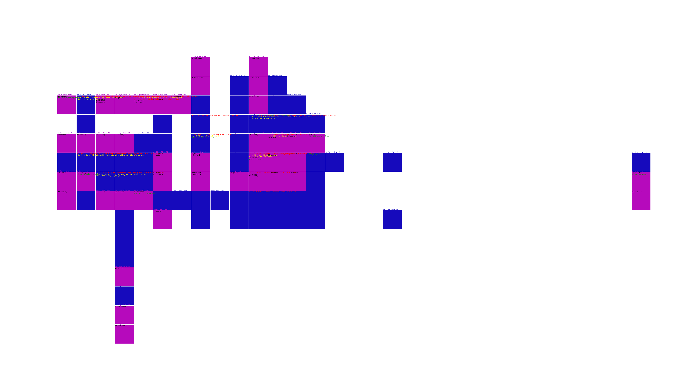
human_world_hidden_region
Item Memory used 16
0 100% 0x50 00_acid_slime wd4.4-5.2 md7-8 a3 a2 m0
30% item_11e_anti_venom
1 50% 0x50 00_acid_slime wd4.4-5.2 md7-8 a3 a2 m0
60% item_99_leg_guard
2 100% 0x20 00_acid_slime wd4.4-5.2 md7-8 a3 a2 m0
30% item_11e_anti_venom
3 50% 0x20 01_blood_slime wd5.2-5.4 md10.100000000000001-34.300000000000004 a5 a4 m0
100% item_10a_cune
4 100% 0x50 06_fanged_worm wd4.800000000000001-7 md4-10.200000000000001 a14 a15 m0
10% item_f_broad_sword
100% item_9_rapier
5 100% 0x20 04_acid_slime wd4.4-5.2 md7-8 a3 a2 m0
6 100% 0x20 05_blood_slime wd5.2-5.4 md10.100000000000001-34.300000000000004 a5 a4 m0
100% item_11c_healing_potion
7 100% 0x20 04_acid_slime wd4.4-5.2 md7-8 a3 a2 m0
30% item_11e_anti_venom
8 100% 0x20 04_acid_slime wd4.4-5.2 md7-8 a3 a2 m0
100% item_11e_anti_venom
9 100% 0x20 04_acid_slime wd4.4-5.2 md7-8 a3 a2 m0
a 25% 0x20 04_acid_slime wd4.4-5.2 md7-8 a3 a2 m0
100% item_11e_anti_venom
b 25% 0x20 05_blood_slime wd5.2-5.4 md10.100000000000001-34.300000000000004 a5 a4 m0
10% item_5_long_sword
c 100% 0x50 08_casket wd7-8 md36.2-48.5 a20 a25 m0
40% item_2_deadly_short_sword
50% item_3_long_sword
100% item_10c_torch
d 100% 0x50 08_casket wd7-8 md36.2-48.5 a20 a25 m0
100% item_10c_torch
e 100% 0x20 09_blood_slime wd5.2-5.4 md10.100000000000001-34.300000000000004 a5 a4 m0
100% item_124_poison_vaccine
f 100% 0x20 09_blood_slime wd5.2-5.4 md10.100000000000001-34.300000000000004 a5 a4 m0
100% item_10a_cune
10 25% 0x20 09_blood_slime wd5.2-5.4 md10.100000000000001-34.300000000000004 a5 a4 m0
20% item_60_scale_mail
50% item_5e_leather_armor
11 25% 0x20 09_blood_slime wd5.2-5.4 md10.100000000000001-34.300000000000004 a5 a4 m0
100% item_124_poison_vaccine
20 100% 0x50 02_parasite wd7.7-2.8000000000000003 md7.5-7.6000000000000005 a12 a12 m0
100% item_12e_dorados_ashes
0 item_61_scale_mail
1 item_11c_healing_potion
2 item_11c_healing_potion
3 item_7e_metal_glove
4 item_10a_cune
5 item_a6_large_shield
6 item_10c_torch
7 item_136_soul_pod_5_sp
8 item_136_soul_pod_5_sp
9 item_10c_torch
a item_12e_dorados_ashes
b item_12e_dorados_ashes
c item_11c_healing_potion
d item_11c_healing_potion
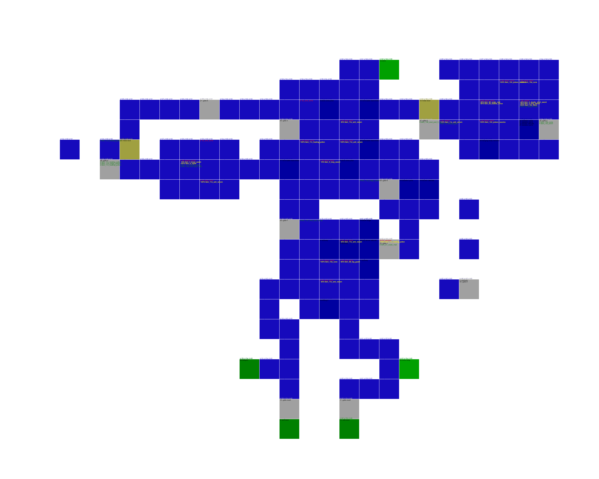
human_world_forgotten_region
Item Memory used 16
0 0% 0x30 02_skeleton wd5.5-3.4000000000000004 md7.300000000000001-8.700000000000001 a15 a14 m0
20% item_92_steel_boots_of_resist
1 0% 0x30 02_skeleton wd5.5-3.4000000000000004 md7.300000000000001-8.700000000000001 a15 a14 m0
30% item_82_caustic_hand_guard
50% item_81_fiery_gauntlet
2 0% 0x30 02_skeleton wd5.5-3.4000000000000004 md7.300000000000001-8.700000000000001 a15 a14 m0
50% item_9_rapier
3 0% 0x30 02_skeleton wd5.5-3.4000000000000004 md7.300000000000001-8.700000000000001 a15 a14 m0
40% item_49_crown_of_resist
60% item_48_crown
4 0% 0x30 02_skeleton wd5.5-3.4000000000000004 md7.300000000000001-8.700000000000001 a15 a14 m0
100% item_10a_cune
5 100% 0x30 00_acid_skull wd5.5-6 md8.9-8.5 a12 a10 m0
50% item_8e_leather_boots
6 100% 0x30 00_acid_skull wd5.5-6 md8.9-8.5 a12 a10 m0
100% item_11e_anti_venom
7 100% 0x30 00_acid_skull wd5.5-6 md8.9-8.5 a12 a10 m0
100% item_11e_anti_venom
8 100% 0x30 00_acid_skull wd5.5-6 md8.9-8.5 a12 a10 m0
9 100% 0x30 01_blood_skull wd5.300000000000001-5.6000000000000005 md7.5-30 a11 a9 m0
a 100% 0x30 00_acid_skull wd5.5-6 md8.9-8.5 a12 a10 m0
100% item_11e_anti_venom
b 100% 0x30 01_blood_skull wd5.300000000000001-5.6000000000000005 md7.5-30 a11 a9 m0
20% item_11f_anti_paralytic
c 50% 0x30 01_blood_skull wd5.300000000000001-5.6000000000000005 md7.5-30 a11 a9 m0
100% item_11f_anti_paralytic
d 25% 0x30 01_blood_skull wd5.300000000000001-5.6000000000000005 md7.5-30 a11 a9 m0
10% item_4a_crown_of_composure
100% item_127_acid_vaccine
e 100% 0x30 05_blood_skull wd5.300000000000001-5.6000000000000005 md7.5-30 a11 a9 m0
50% item_a4_small_shield
f 100% 0x30 05_blood_skull wd5.300000000000001-5.6000000000000005 md7.5-30 a11 a9 m0
100% item_126_bottle_of_light
10 100% 0x30 05_blood_skull wd5.300000000000001-5.6000000000000005 md7.5-30 a11 a9 m0
11 25% 0x30 05_blood_skull wd5.300000000000001-5.6000000000000005 md7.5-30 a11 a9 m0
30% item_90_steel_boots
12 25% 0x30 05_blood_skull wd5.300000000000001-5.6000000000000005 md7.5-30 a11 a9 m0
100% item_11f_anti_paralytic
13 25% 0x30 05_blood_skull wd5.300000000000001-5.6000000000000005 md7.5-30 a11 a9 m0
60% item_b_lethal_rapier
100% item_23_guardian_bastard_sword
0 item_ac_great_shield
1 item_136_soul_pod_5_sp
2 item_10a_cune
3 item_11c_healing_potion
4 item_11c_healing_potion
5 item_136_soul_pod_5_sp
6 item_10a_cune
7 item_10a_cune
8 item_117_brass_key
9 item_126_bottle_of_light
a item_127_acid_vaccine
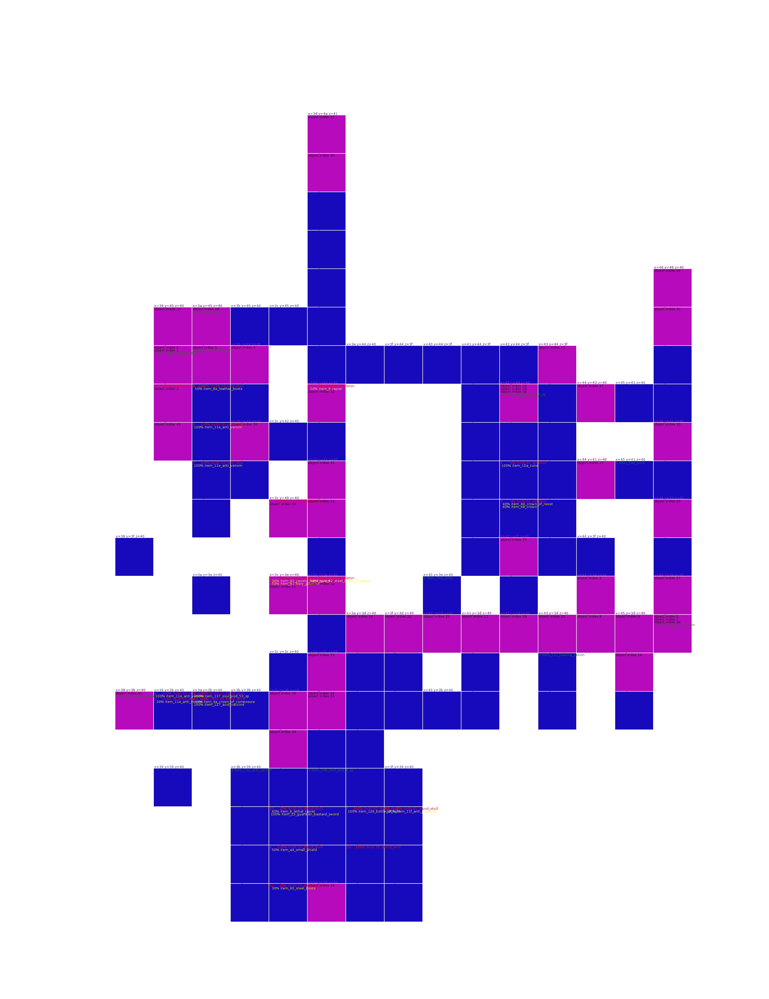
human_world_cursed_region
Item Memory used 16
0 100% 0x30 02_tongue_imp wd5.2-3.5 md6.5-9 a12 a15 m0
70% item_a2_buckler
1 100% 0x30 02_tongue_imp wd5.2-3.5 md6.5-9 a12 a15 m0
2 100% 0x35 00_dark_spider wd5-3.8000000000000003 md5-5.7 a8 a8 m0
100% item_12e_dorados_ashes
3 25% 0x35 00_dark_spider wd5-3.8000000000000003 md5-5.7 a8 a8 m0
50% item_8d_leather_boots
4 100% 0x30 01_shadow_spider wd5.7-7.800000000000001 md7-7.300000000000001 a12 a13 m0
100% item_11d_magic_potion
5 100% 0x35 00_dark_spider wd5-3.8000000000000003 md5-5.7 a8 a8 m0
50% item_8f_hard_boots
6 50% 0x35 00_dark_spider wd5-3.8000000000000003 md5-5.7 a8 a8 m0
50% item_79_leather_glove
30% item_7c_wooden_glove
7 25% 0x35 00_dark_spider wd5-3.8000000000000003 md5-5.7 a8 a8 m0
100% item_11c_healing_potion
8 25% 0x35 00_dark_spider wd5-3.8000000000000003 md5-5.7 a8 a8 m0
100% item_12e_dorados_ashes
9 100% 0x30 06_tongue_imp wd5.2-3.5 md6.5-9 a12 a15 m0
20% item_5f_magical_leather_armor
50% item_5e_leather_armor
a 100% 0x30 06_tongue_imp wd5.2-3.5 md6.5-9 a12 a15 m0
50% item_1_short_sword
b 100% 0x30 08_dark_spider wd5-3.8000000000000003 md5-5.7 a8 a8 m0
c 100% 0x30 08_dark_spider wd5-3.8000000000000003 md5-5.7 a8 a8 m0
100% item_124_poison_vaccine
d 100% 0x30 09_shadow_spider wd5.7-7.800000000000001 md7-7.300000000000001 a12 a13 m0
100% item_11d_magic_potion
e 25% 0x30 08_dark_spider wd5-3.8000000000000003 md5-5.7 a8 a8 m0
30% item_48_crown
80% item_47_cap
f 25% 0x80 09_shadow_spider wd5.7-7.800000000000001 md7-7.300000000000001 a12 a13 m0
100% item_10e_sacred_feather
10 25% 0x10 09_shadow_spider wd5.7-7.800000000000001 md7-7.300000000000001 a12 a13 m0
100% item_10e_sacred_feather
21 100% 0x50 0a_guardian_a wd8-4.2 md11-9.3 a15 a16 m0
30% item_36_swift_morning_star
30% item_34_shining_mace
30 100% 0x30 04_fat_mole_a wd0-0 md0-0 a0 a0 m0
0 item_4d_helm
1 item_11c_healing_potion
2 item_11c_healing_potion
3 item_7a_leather_glove
4 item_11c_healing_potion
5 item_10a_cune
6 item_39_axe
7 item_12e_dorados_ashes
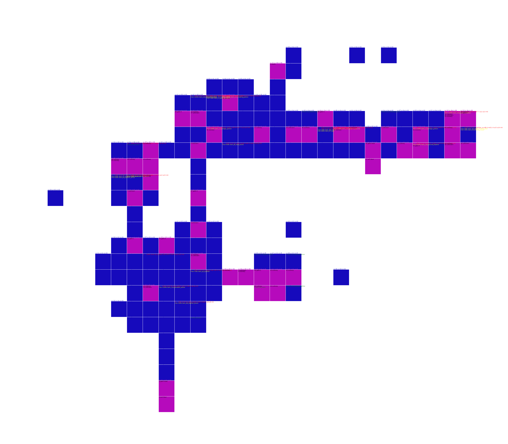
Earth World
earth_world_rotting_cavern
Item Memory used 16
0 100% 0x30 02_elder wd5.9-6.2 md2-3.6 a14 a14 m0
100% item_11c_healing_potion
1 100% 0x20 00_watcher_plant wd3-5.2 md2-3.2 a12 a12 m0
2 100% 0x20 00_watcher_plant wd3-5.2 md2-3.2 a12 a12 m0
50% item_91_steel_boots
3 50% 0x20 00_watcher_plant wd3-5.2 md2-3.2 a12 a12 m0
4 100% 0x30 01_myconid wd4.3-7 md2.6-8 a14 a13 m0
5 100% 0x30 01_myconid wd4.3-7 md2.6-8 a14 a13 m0
100% item_11e_anti_venom
6 50% 0x30 01_myconid wd4.3-7 md2.6-8 a14 a13 m0
80% item_7b_leather_glove
7 25% 0x20 00_watcher_plant wd3-5.2 md2-3.2 a12 a12 m0
100% item_124_poison_vaccine
8 100% 0x40 06_elder wd5.9-6.2 md2-3.6 a14 a14 m0
9 100% 0x40 06_elder wd5.9-6.2 md2-3.6 a14 a14 m0
100% item_11e_anti_venom
a 100% 0x35 04_minor_dwarf wd5-6.6000000000000005 md3-5 a12 a12 m0
100% item_10a_cune
b 100% 0x35 04_minor_dwarf wd5-6.6000000000000005 md3-5 a12 a12 m0
100% item_11c_healing_potion
c 50% 0x35 04_minor_dwarf wd5-6.6000000000000005 md3-5 a12 a12 m0
100% item_10a_cune
d 100% 0x20 09_imp wd5.7-7.4 md4.800000000000001-6 a10 a11 m0
20% item_d7_ring_of_poison
e 100% 0x20 09_imp wd5.7-7.4 md4.800000000000001-6 a10 a11 m0
f 100% 0x20 09_imp wd5.7-7.4 md4.800000000000001-6 a10 a11 m0
10 100% 0x20 09_imp wd5.7-7.4 md4.800000000000001-6 a10 a11 m0
10% item_d9_ring_of_protect
11 100% 0x20 09_imp wd5.7-7.4 md4.800000000000001-6 a10 a11 m0
20% item_c9_summoner_ring_of_frost
12 100% 0x25 08_star_serpent wd4.2-6.5 md6-5.2 a15 a15 m0
100% item_e8_bracelet_of_balance
13 50% 0x25 08_star_serpent wd4.2-6.5 md6-5.2 a15 a15 m0
20% item_e7_bracelet_of_resist
20% item_d3_dark_ring
100% item_120_divine_symbol
14 25% 0x25 08_star_serpent wd4.2-6.5 md6-5.2 a15 a15 m0
70% item_a7_large_shield
100% item_120_divine_symbol
15 100% 0x10 0d_tondrom wd13.5-10.200000000000001 md4.5-6.6000000000000005 a15 a14 m0
16 100% 0x10 0d_tondrom wd13.5-10.200000000000001 md4.5-6.6000000000000005 a15 a14 m0
17 25% 0x10 0d_tondrom wd13.5-10.200000000000001 md4.5-6.6000000000000005 a15 a14 m0
18 25% 0x10 0d_tondrom wd13.5-10.200000000000001 md4.5-6.6000000000000005 a15 a14 m0
19 100% 0x20 0c_barrel_snail wd6.800000000000001-4.2 md2-9 a8 a7 m0
100% item_11e_anti_venom
1a 100% 0x20 0c_barrel_snail wd6.800000000000001-4.2 md2-9 a8 a7 m0
100% item_11e_anti_venom
1b 100% 0x60 0e_elder wd5.9-6.2 md2-3.6 a14 a14 m0
80% item_49_crown_of_resist
1c 100% 0x30 0e_elder wd5.9-6.2 md2-3.6 a14 a14 m0
100% item_120_divine_symbol
1d 100% 0x30 0e_elder wd5.9-6.2 md2-3.6 a14 a14 m0
100% item_120_divine_symbol
1e 25% 0x30 0e_elder wd5.9-6.2 md2-3.6 a14 a14 m0
50% item_63_plate_mail
50% item_62_scale_mail_of_curing
20 100% 0x10 05_dwarfling wd5-5 md7.800000000000001-4.5 a12 a12 m6
30 100% 0x20 0a_blank wd0-0 md0-0 a0 a0 m5
0 item_11_broad_sword
1 item_11c_healing_potion
2 item_11c_healing_potion
3 item_136_soul_pod_5_sp
4 item_11e_anti_venom
5 item_124_poison_vaccine
6 item_11e_anti_venom
7 item_118_iron_key
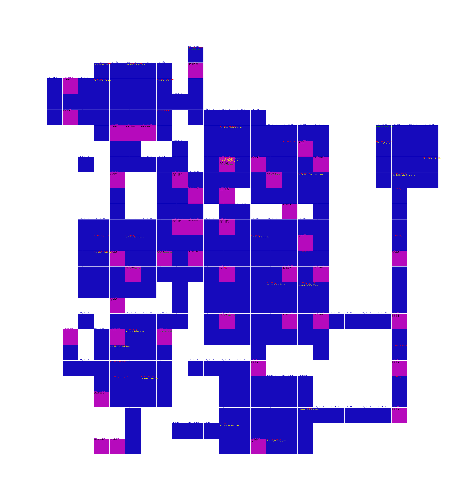
earth_world_poisonous_cavern
Item Memory used 16
0 100% 0x15 02_watcher_plant wd3-5.2 md2-3.2 a12 a12 m0
100% item_10a_cune
1 100% 0x15 02_watcher_plant wd3-5.2 md2-3.2 a12 a12 m0
2 100% 0x15 02_watcher_plant wd3-5.2 md2-3.2 a12 a12 m0
100% item_11c_healing_potion
3 100% 0x15 01_beak_plant wd3-6 md4.6000000000000005-4.1000000000000005 a15 a15 m0
60% item_33_crushing_mace
4 100% 0x15 01_beak_plant wd3-6 md4.6000000000000005-4.1000000000000005 a15 a15 m0
5 100% 0x15 01_beak_plant wd3-6 md4.6000000000000005-4.1000000000000005 a15 a15 m0
6 50% 0x15 01_beak_plant wd3-6 md4.6000000000000005-4.1000000000000005 a15 a15 m0
7 50% 0x15 02_watcher_plant wd3-5.2 md2-3.2 a12 a12 m0
100% item_10a_cune
8 50% 0x15 02_watcher_plant wd3-5.2 md2-3.2 a12 a12 m0
100% item_10a_cune
9 50% 0x15 02_watcher_plant wd3-5.2 md2-3.2 a12 a12 m0
100% item_11c_healing_potion
a 25% 0x15 02_watcher_plant wd3-5.2 md2-3.2 a12 a12 m0
100% item_11c_healing_potion
b 100% 0x50 09_dwarf_warrior wd9.3-8.5 md4.800000000000001-6.800000000000001 a15 a15 m0
70% item_5f_magical_leather_armor
c 100% 0x60 09_dwarf_warrior wd9.3-8.5 md4.800000000000001-6.800000000000001 a15 a15 m0
100% item_11e_anti_venom
d 100% 0x40 08_trickster wd5.300000000000001-6.7 md3-1.4000000000000001 a12 a10 m0
40% item_ec_bracelet_of_recovery
e 100% 0x40 08_trickster wd5.300000000000001-6.7 md3-1.4000000000000001 a12 a10 m0
f 25% 0x40 08_trickster wd5.300000000000001-6.7 md3-1.4000000000000001 a12 a10 m0
10 100% 0x15 0c_hanging_dead wd5-3.2 md4.2-3 a5 a5 m0
11 100% 0x15 0c_hanging_dead wd5-3.2 md4.2-3 a5 a5 m0
12 100% 0x15 0c_hanging_dead wd5-3.2 md4.2-3 a5 a5 m0
13 100% 0x15 0c_hanging_dead wd5-3.2 md4.2-3 a5 a5 m0
14 100% 0x15 0c_hanging_dead wd5-3.2 md4.2-3 a5 a5 m0
80% item_d7_ring_of_poison
15 100% 0x15 0c_hanging_dead wd5-3.2 md4.2-3 a5 a5 m0
16 100% 0x20 0e_watcher_plant wd3-5.2 md2-3.2 a12 a12 m0
100% item_11c_healing_potion
17 100% 0x20 0e_watcher_plant wd3-5.2 md2-3.2 a12 a12 m0
100% item_10a_cune
18 25% 0x20 0e_watcher_plant wd3-5.2 md2-3.2 a12 a12 m0
100% item_11c_healing_potion
19 100% 0x30 0d_trickster wd7.800000000000001-10.5 md7.2-4.6000000000000005 a15 a18 m0
1a 100% 0x30 0d_trickster wd7.800000000000001-10.5 md7.2-4.6000000000000005 a15 a18 m0
100% item_42_bow
1b 50% 0x30 0d_trickster wd7.800000000000001-10.5 md7.2-4.6000000000000005 a15 a18 m0
40% item_ce_soul_ring
1d 100% 0x20 02_watcher_plant wd3-5.2 md2-3.2 a12 a12 m0
100% item_124_poison_vaccine
1e 100% 0x30 0d_trickster wd7.800000000000001-10.5 md7.2-4.6000000000000005 a15 a18 m0
30% item_14_crushing_broad_sword
1f 100% 0x30 0d_trickster wd7.800000000000001-10.5 md7.2-4.6000000000000005 a15 a18 m0
30% item_fb_magical_amulet
20 100% 0x10 00_duhrin wd6.5-12.4 md7-8.6 a0 a0 m8
100% item_12f_spirit_key
30 100% 0x20 05_blank wd0-0 md0-0 a0 a0 m0
31 100% 0x70 04_auriel_b wd15-16 md6.5-6.5 a75 a70 m9
32 100% 0x50 0b_blank wd0-0 md0-0 a0 a0 m0
33 100% 0x50 0a_blank wd0-0 md0-0 a0 a0 m7
0 item_10c_torch
1 item_11c_healing_potion
2 item_a5_shield_of_resist
3 item_10a_cune
5 item_11c_healing_potion
6 item_136_soul_pod_5_sp
7 item_136_soul_pod_5_sp
8 item_124_poison_vaccine
a item_c4_summoner_ring_of_fire
b item_11c_healing_potion
1c item_3_long_sword
1d item_12f_spirit_key

earth_world_stone_cavern
Item Memory used 16
0 100% 0x60 01_demon_bat wd5-6.800000000000001 md8-4.800000000000001 a14 a20 m0
40% item_5_long_sword
1 100% 0x50 01_demon_bat wd5-6.800000000000001 md8-4.800000000000001 a14 a20 m0
10% item_7_fiery_long_sword
2 100% 0x50 01_demon_bat wd5-6.800000000000001 md8-4.800000000000001 a14 a20 m0
3 50% 0x30 05_hobble_worm wd6-8.5 md4.5-3.6 a25 a20 m0
4 50% 0x30 05_hobble_worm wd6-8.5 md4.5-3.6 a25 a20 m0
100% item_11c_healing_potion
5 100% 0x30 05_hobble_worm wd6-8.5 md4.5-3.6 a25 a20 m0
70% item_3a_giant_axe
6 100% 0x30 05_hobble_worm wd6-8.5 md4.5-3.6 a25 a20 m0
20% item_af_dark_great_shield
100% item_11c_healing_potion
7 50% 0x30 05_hobble_worm wd6-8.5 md4.5-3.6 a25 a20 m0
50% item_4c_devil_crown
8 25% 0x30 05_hobble_worm wd6-8.5 md4.5-3.6 a25 a20 m0
100% item_11c_healing_potion
9 25% 0x30 05_hobble_worm wd6-8.5 md4.5-3.6 a25 a20 m0
100% item_11c_healing_potion
a 100% 0x40 0a_barrel_snail wd8-7 md6-9.5 a23 a20 m0
b 100% 0x40 0a_barrel_snail wd8-7 md6-9.5 a23 a20 m0
100% item_120_divine_symbol
c 100% 0x25 08_clay_servant wd13.200000000000001-13.8 md5-7 a27 a26 m0
50% item_90_steel_boots
d 100% 0x25 08_clay_servant wd13.200000000000001-13.8 md5-7 a27 a26 m0
100% item_18_bastard_sword
e 100% 0x25 08_clay_servant wd13.200000000000001-13.8 md5-7 a27 a26 m0
40% item_e9_bracelet_of_movement
f 80% 0x25 08_clay_servant wd13.200000000000001-13.8 md5-7 a27 a26 m0
10 25% 0x40 0a_barrel_snail wd8-7 md6-9.5 a23 a20 m0
60% item_60_scale_mail
100% item_120_divine_symbol
11 25% 0x40 0a_barrel_snail wd8-7 md6-9.5 a23 a20 m0
100% item_120_divine_symbol
12 25% 0x40 0a_barrel_snail wd8-7 md6-9.5 a23 a20 m0
40% item_9b_harden_leg_guard
13 100% 0x25 0c_dybbuk wd6.5-6 md8-7.800000000000001 a12 a14 m10
100% item_db_caustic_ring
14 100% 0x20 0d_crying_root wd5-8.4 md2-10 a12 a12 m0
100% item_10e_sacred_feather
15 100% 0x20 0d_crying_root wd5-8.4 md2-10 a12 a12 m0
100% item_10e_sacred_feather
16 100% 0x20 0d_crying_root wd5-8.4 md2-10 a12 a12 m0
100% item_10e_sacred_feather
17 10% 0x80 0d_crying_root wd5-8.4 md2-10 a12 a12 m0
100% item_d4_dark_ring
30 100% 0x50 00_dybbuk wd6-7 md8-7.800000000000001 a12 a14 m10
31 100% 0x0 04_dybbuk wd6-7 md8-7.800000000000001 a12 a14 m10
32 100% 0x0 04_dybbuk wd6-7 md8-7.800000000000001 a12 a14 m10
0 item_10a_cune
1 item_10a_cune
2 item_130_blue_crystal
3 item_126_bottle_of_light
4 item_126_bottle_of_light
5 item_126_bottle_of_light
6 item_11c_healing_potion
7 item_11c_healing_potion
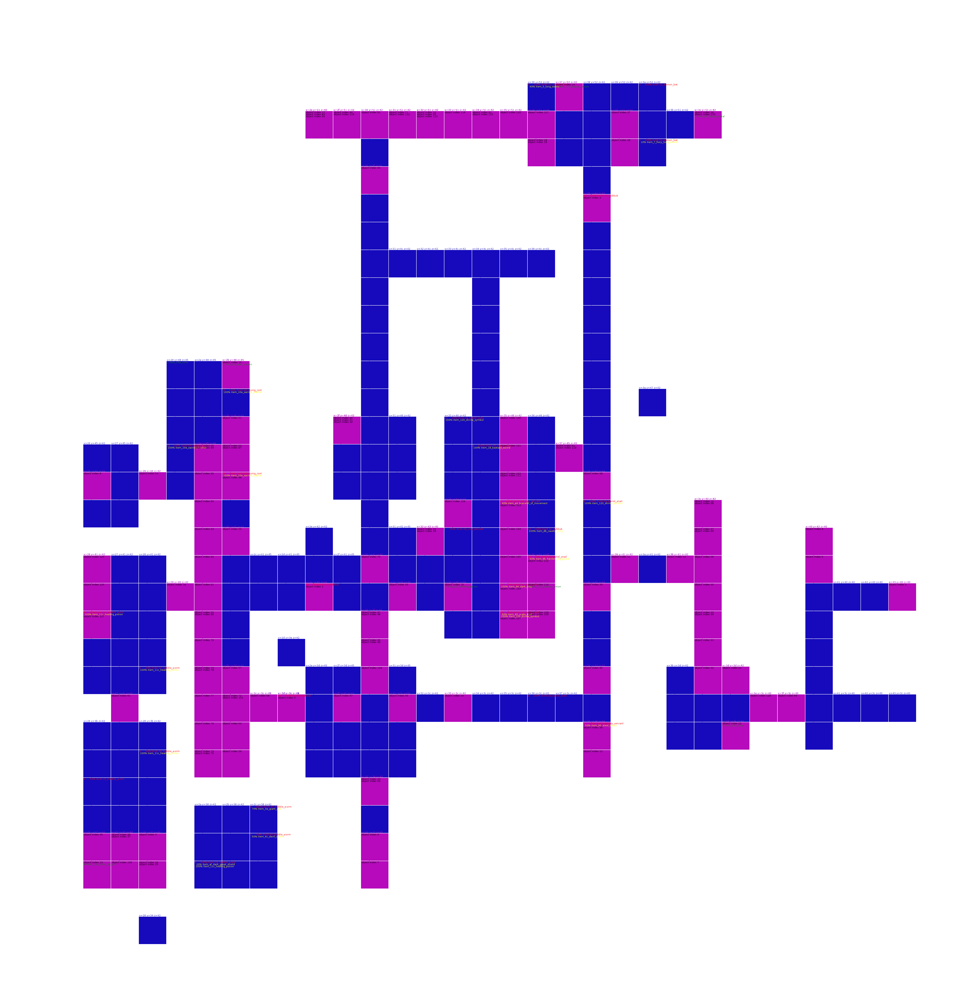
earth_world_quaking_cavern
Item Memory used 16
0 100% 0x30 01_blue_flicker wd4.6000000000000005-5 md4-4 a8 a6 m0
1 100% 0x30 01_blue_flicker wd4.6000000000000005-5 md4-4 a8 a6 m0
100% item_10d_lamp
2 100% 0x30 01_blue_flicker wd4.6000000000000005-5 md4-4 a8 a6 m0
3 100% 0x30 01_blue_flicker wd4.6000000000000005-5 md4-4 a8 a6 m0
100% item_124_poison_vaccine
4 100% 0x30 01_blue_flicker wd4.6000000000000005-5 md4-4 a8 a6 m0
100% item_10d_lamp
5 100% 0x30 01_blue_flicker wd4.6000000000000005-5 md4-4 a8 a6 m0
100% item_10d_lamp
6 100% 0x60 00_sand_leech_a wd3-4.2 md5-8.200000000000001 a8 a7 m0
100% item_10a_cune
7 100% 0x10 00_sand_leech_a wd3-4.2 md5-8.200000000000001 a8 a7 m0
8 100% 0x10 00_sand_leech_a wd3-4.2 md5-8.200000000000001 a8 a7 m0
100% item_10a_cune
9 100% 0x10 00_sand_leech_a wd3-4.2 md5-8.200000000000001 a8 a7 m0
a 50% 0x10 00_sand_leech_a wd3-4.2 md5-8.200000000000001 a8 a7 m0
80% item_fb_magical_amulet
b 100% 0x90 05_acid_pod wd5-7 md12-8 a12 a12 m0
20% item_83_gauntlet
50% item_7c_wooden_glove
c 10% 0x35 04_kiljoy wd4-6 md6-4.5 a20 a20 m0
d 10% 0x35 04_kiljoy wd4-6 md6-4.5 a20 a20 m0
60% item_cf_soul_ring
e 10% 0x35 04_kiljoy wd4-6 md6-4.5 a20 a20 m0
60% item_e7_bracelet_of_resist
f 50% 0x30 05_acid_pod wd5-7 md12-8 a12 a12 m0
100% item_12e_dorados_ashes
10 50% 0x30 05_acid_pod wd5-7 md12-8 a12 a12 m0
100% item_12e_dorados_ashes
11 50% 0x30 05_acid_pod wd5-7 md12-8 a12 a12 m0
100% item_12e_dorados_ashes
12 100% 0x30 09_cocoon_plant wd6.2-10.200000000000001 md3.5-4.5 a15 a15 m0
100% item_11e_anti_venom
13 100% 0x30 09_cocoon_plant wd6.2-10.200000000000001 md3.5-4.5 a15 a15 m0
50% item_11e_anti_venom
14 50% 0x30 09_cocoon_plant wd6.2-10.200000000000001 md3.5-4.5 a15 a15 m0
100% item_11e_anti_venom
15 50% 0x30 09_cocoon_plant wd6.2-10.200000000000001 md3.5-4.5 a15 a15 m0
100% item_11e_anti_venom
16 100% 0x40 08_torg wd4.4-6.300000000000001 md2.7-5.300000000000001 a30 a20 m0
90% item_10_broad_sword
17 100% 0x40 08_torg wd4.4-6.300000000000001 md2.7-5.300000000000001 a30 a20 m0
100% item_10d_lamp
18 100% 0x40 08_torg wd4.4-6.300000000000001 md2.7-5.300000000000001 a30 a20 m0
80% item_62_scale_mail_of_curing
20 100% 0x10 02_sand_leech_b wd8.700000000000001-10 md12-60 a24 a24 m0
20% item_95_caustic_steel_boots
21 100% 0x10 02_sand_leech_b wd8.700000000000001-10 md12-60 a24 a24 m0
100% item_10a_cune
22 100% 0x10 02_sand_leech_b wd8.700000000000001-10 md12-60 a24 a24 m0
100% item_42_bow
0 item_7d_wooden_glove
1 item_a9_large_shield_of_balance
2 item_124_poison_vaccine
3 item_125_dust_of_rage
4 item_10a_cune
5 item_125_dust_of_rage
6 item_10a_cune
7 item_10a_cune
8 item_124_poison_vaccine
9 item_125_dust_of_rage
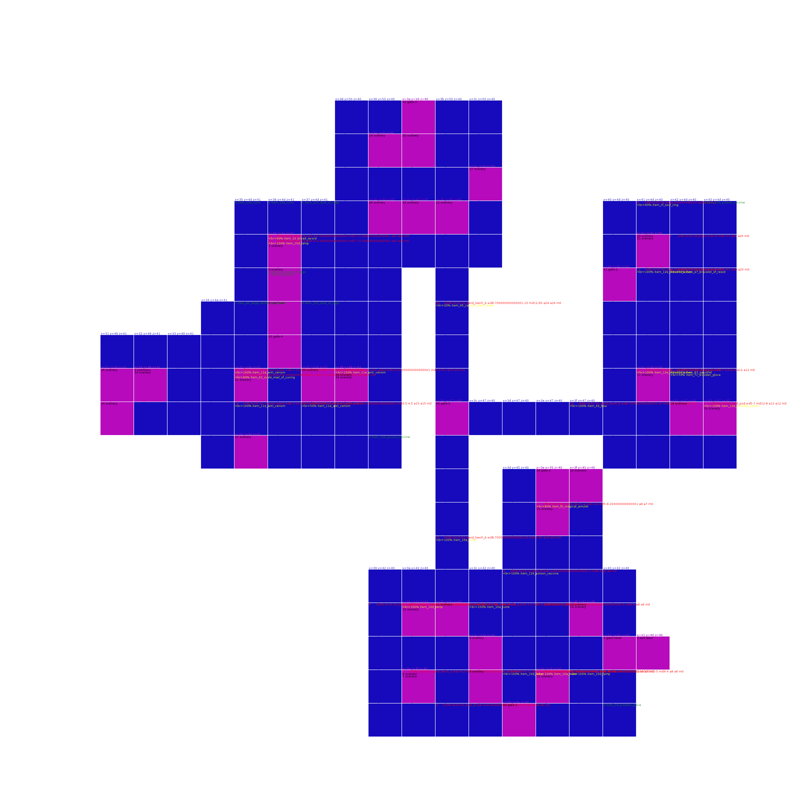
earth_world_false_pit_cavern
Item Memory used 16
0 100% 0x50 00_earth_knight wd7.800000000000001-7.6000000000000005 md7-5.6000000000000005 a30 a26 m0
50% item_a8_harden_large_shield
50% item_a9_large_shield_of_balance
1 100% 0x50 01_acid_pod wd5-7 md12-8 a12 a12 m0
100% item_11c_healing_potion
2 50% 0x10 01_acid_pod wd5-7 md12-8 a12 a12 m0
100% item_11c_healing_potion
3 50% 0x10 01_acid_pod wd5-7 md12-8 a12 a12 m0
100% item_11c_healing_potion
4 50% 0x10 01_acid_pod wd5-7 md12-8 a12 a12 m0
100% item_12e_dorados_ashes
5 50% 0x10 01_acid_pod wd5-7 md12-8 a12 a12 m0
100% item_11c_healing_potion
6 50% 0x10 05_cocoon_plant wd5-7 md12-8 a12 a12 m0
100% item_12e_dorados_ashes
7 50% 0x10 05_cocoon_plant wd5-7 md12-8 a12 a12 m0
100% item_11c_healing_potion
8 50% 0x10 05_cocoon_plant wd5-7 md12-8 a12 a12 m0
50% item_12e_dorados_ashes
9 100% 0x20 04_cannon_snail wd6.2-10 md4.5-4.6000000000000005 a20 a17 m0
60% item_81_fiery_gauntlet
a 100% 0x20 04_cannon_snail wd6.2-10 md4.5-4.6000000000000005 a20 a17 m0
40% item_95_caustic_steel_boots
40% item_91_steel_boots
b 75% 0x30 08_guardian_b wd6-4.2 md17.8-17.900000000000002 a15 a16 m0
100% item_10a_cune
c 75% 0x30 08_guardian_b wd6-4.2 md17.8-17.900000000000002 a15 a16 m0
100% item_10a_cune
d 100% 0x20 09_sloth_bug wd8-7 md6-9.5 a23 a20 m0
30% item_51_full_helm
e 100% 0x20 09_sloth_bug wd8-7 md6-9.5 a23 a20 m0
30% item_64_plate_mail
f 50% 0x20 09_sloth_bug wd8-7 md6-9.5 a23 a20 m0
60% item_82_caustic_hand_guard
10 50% 0x20 09_sloth_bug wd8-7 md6-9.5 a23 a20 m0
50% item_4b_wizard_crown
11 100% 0x50 0c_ray_plant wd10.5-4.5 md9-7 a16 a15 m0
100% item_fe_deadly_amulet
12 100% 0x50 0d_cocoon_plant wd5-7 md12-8 a12 a12 m0
100% item_11c_healing_potion
13 100% 0x10 0d_cocoon_plant wd5-7 md12-8 a12 a12 m0
100% item_11c_healing_potion
14 100% 0x10 0d_cocoon_plant wd5-7 md12-8 a12 a12 m0
100% item_11c_healing_potion
15 100% 0x10 0d_cocoon_plant wd5-7 md12-8 a12 a12 m0
50% item_11d_magic_potion
16 10% 0x10 0d_cocoon_plant wd5-7 md12-8 a12 a12 m0
100% item_d9_ring_of_protect
0 item_ea_bracelet_of_composure
1 item_10a_cune
2 item_b1_tower_shield
3 item_b3_tower_shield_of_honor
4 item_11d_magic_potion
5 item_11d_magic_potion
6 item_139_soul_pod_14_sp
7 item_139_soul_pod_14_sp
8 item_139_soul_pod_14_sp
9 item_10a_cune
a item_10a_cune
b item_130_blue_crystal
c item_12e_dorados_ashes
d item_12e_dorados_ashes
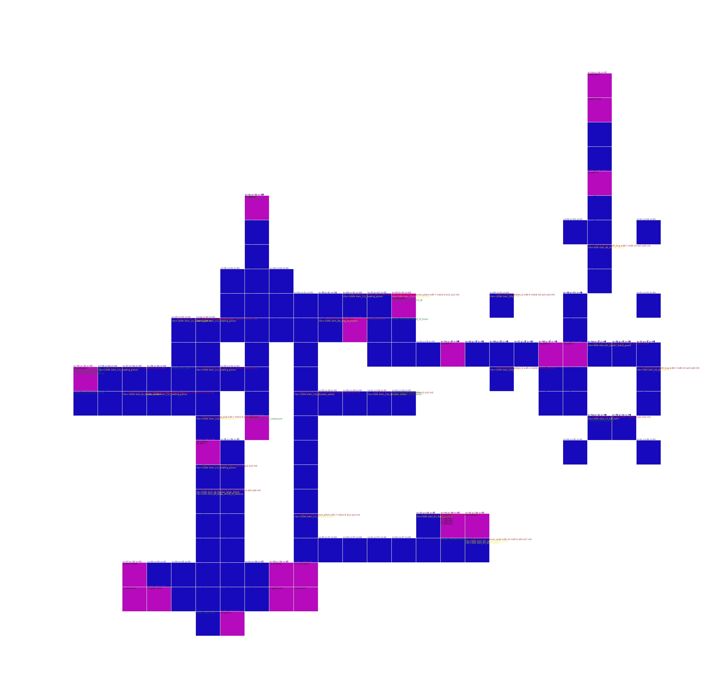
earth_world_hostile_rock_cavern
Item Memory used 14
0 100% 0x30 01_earth_knight wd7.800000000000001-7.6000000000000005 md7-5.6000000000000005 a30 a26 m0
100% item_11f_anti_paralytic
1 100% 0x30 01_earth_knight wd7.800000000000001-7.6000000000000005 md7-5.6000000000000005 a30 a26 m0
100% item_11f_anti_paralytic
2 100% 0x30 01_earth_knight wd7.800000000000001-7.6000000000000005 md7-5.6000000000000005 a30 a26 m0
100% item_11e_anti_venom
3 100% 0x30 01_earth_knight wd7.800000000000001-7.6000000000000005 md7-5.6000000000000005 a30 a26 m0
60% item_4f_magical_helm
100% item_11f_anti_paralytic
4 100% 0x60 05_earth_knight wd7.800000000000001-7.6000000000000005 md7-5.6000000000000005 a30 a26 m0
100% item_11c_healing_potion
5 100% 0x60 05_earth_knight wd7.800000000000001-7.6000000000000005 md7-5.6000000000000005 a30 a26 m0
100% item_122_evil_eye
6 100% 0x30 00_black_onyx wd7-4 md34.5-33.6 a26 a28 m0
50% item_11c_healing_potion
7 100% 0x30 00_black_onyx wd7-4 md34.5-33.6 a26 a28 m0
100% item_126_bottle_of_light
8 50% 0x30 00_black_onyx wd7-4 md34.5-33.6 a26 a28 m0
50% item_11e_anti_venom
9 25% 0x30 00_black_onyx wd7-4 md34.5-33.6 a26 a28 m0
100% item_126_bottle_of_light
a 25% 0x30 00_black_onyx wd7-4 md34.5-33.6 a26 a28 m0
100% item_126_bottle_of_light
21 100% 0x10 04_dread_knight wd11.5-10 md15-13 a45 a40 m11
0% item_8_silent_sword
0% item_2c_deadly_great_sword
0% item_27_great_sword
0 item_9a_leg_guard
1 item_d7_ring_of_poison
2 item_67_plate_mail_of_curing
3 item_128_spirit_book
4 item_136_soul_pod_5_sp
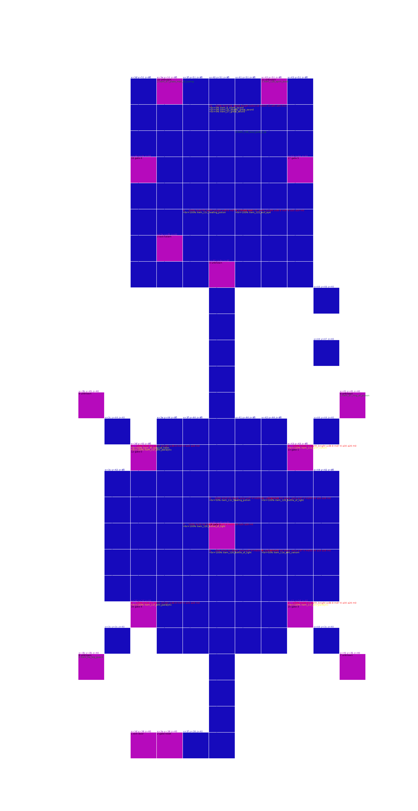
Fire World
fire_world_burning_cavern
Item Memory used 16
0 100% 0x30 02_mystic_tower wd7.9-5.5 md5-7 a20 a20 m0
10% item_3_long_sword
1 100% 0x30 02_mystic_tower wd7.9-5.5 md5-7 a20 a20 m0
100% item_10d_lamp
2 100% 0x50 02_mystic_tower wd7.9-5.5 md5-7 a20 a20 m0
25% item_6_keenest_long_sword
3 50% 0x30 02_mystic_tower wd7.9-5.5 md5-7 a20 a20 m0
4 15% 0x30 02_mystic_tower wd7.9-5.5 md5-7 a20 a20 m0
100% item_123_fire_world_stone
5 15% 0x30 02_mystic_tower wd7.9-5.5 md5-7 a20 a20 m0
100% item_123_fire_world_stone
6 100% 0x80 06_mystic_tower wd7.9-5.5 md5-7 a20 a20 m0
7 30% 0x30 06_mystic_tower wd7.9-5.5 md5-7 a20 a20 m0
8 30% 0x30 06_mystic_tower wd7.9-5.5 md5-7 a20 a20 m0
9 25% 0x50 04_berzerker wd6.5-4.5 md2-7.2 a35 a28 m0
50% item_b_lethal_rapier
a 100% 0x60 06_mystic_tower wd7.9-5.5 md5-7 a20 a20 m0
100% item_10d_lamp
b 100% 0x60 06_mystic_tower wd7.9-5.5 md5-7 a20 a20 m0
50% item_10d_lamp
c 100% 0x60 06_mystic_tower wd7.9-5.5 md5-7 a20 a20 m0
d 100% 0x60 06_mystic_tower wd7.9-5.5 md5-7 a20 a20 m0
e 100% 0x60 08_berzerker wd6.5-4.5 md2-7.2 a35 a28 m0
30% item_93_steel_boots_of_curing
30% item_94_steel_boots_of_resist
f 100% 0x60 08_berzerker wd6.5-4.5 md2-7.2 a35 a28 m0
30% item_c5_summoner_ring_of_fire
10 100% 0x60 09_iron_crusher wd8.200000000000001-8.8 md2-8 a24 a22 m0
11 25% 0x90 08_berzerker wd6.5-4.5 md2-7.2 a35 a28 m0
12 25% 0x90 08_berzerker wd6.5-4.5 md2-7.2 a35 a28 m0
13 100% 0x40 0e_mystic_tower wd7.9-5.5 md5-7 a20 a20 m0
50% item_19_bastard_sword
14 100% 0x40 0e_mystic_tower wd7.9-5.5 md5-7 a20 a20 m0
15 50% 0x30 0e_mystic_tower wd7.9-5.5 md5-7 a20 a20 m0
50% item_50_full_helm
16 100% 0x40 0d_dweller wd8.200000000000001-8.8 md2-8 a24 a22 m0
30% item_32_mace
17 100% 0x40 0d_dweller wd8.200000000000001-8.8 md2-8 a24 a22 m0
10% item_73_full_plate
18 100% 0x40 0d_dweller wd8.200000000000001-8.8 md2-8 a24 a22 m0
40% item_68_plate_mail
19 100% 0x40 0d_dweller wd8.200000000000001-8.8 md2-8 a24 a22 m0
50% item_3c_crushing_axe
1a 50% 0x30 0e_mystic_tower wd7.9-5.5 md5-7 a20 a20 m0
40% item_b2_tower_shield
0 item_11c_healing_potion
1 item_11c_healing_potion
2 item_fc_amulet_of_movement
3 item_b9_gothic_shield
4 item_6a_fiery_plate_mail
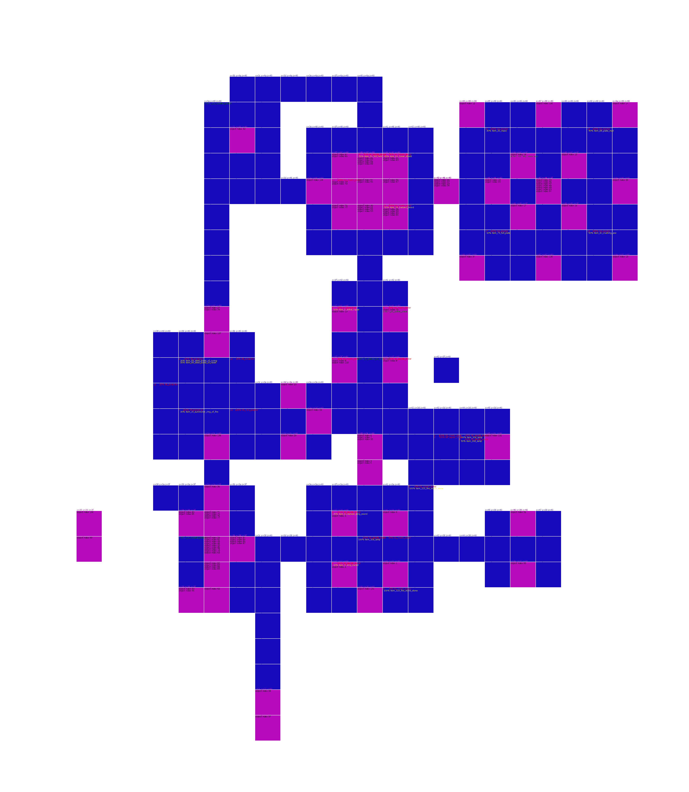
fire_world_molten_cavern
Item Memory used 16
0 100% 0x20 01_horned_skull wd6-5 md4-7 a26 a26 m0
1 100% 0x30 01_horned_skull wd6-5 md4-7 a26 a26 m0
2 100% 0x30 01_horned_skull wd6-5 md4-7 a26 a26 m0
3 100% 0x60 01_horned_skull wd6-5 md4-7 a26 a26 m0
4 30% 0x30 01_horned_skull wd6-5 md4-7 a26 a26 m0
80% item_ed_mind_bracelet
5 30% 0x30 01_horned_skull wd6-5 md4-7 a26 a26 m0
6 100% 0x20 06_mystic_tower wd7.9-5.5 md5-7 a20 a20 m0
7 50% 0x20 06_mystic_tower wd7.9-5.5 md5-7 a20 a20 m0
100% item_10d_lamp
8 50% 0x20 06_mystic_tower wd7.9-5.5 md5-7 a20 a20 m0
80% item_ff_amulet_of_composure
9 100% 0x60 04_berzerker wd6.5-4.5 md2-7.2 a35 a28 m0
30% item_12e_dorados_ashes
a 100% 0x60 04_berzerker wd6.5-4.5 md2-7.2 a35 a28 m0
30% item_12e_dorados_ashes
b 100% 0x60 04_berzerker wd6.5-4.5 md2-7.2 a35 a28 m0
30% item_12e_dorados_ashes
c 50% 0x60 04_berzerker wd6.5-4.5 md2-7.2 a35 a28 m0
d 50% 0x60 04_berzerker wd6.5-4.5 md2-7.2 a35 a28 m0
e 100% 0x30 09_steel_servant wd8.700000000000001-10.700000000000001 md6.4-9.8 a26 a28 m0
50% item_3d_deadly_axe
100% item_11c_healing_potion
f 50% 0x30 09_steel_servant wd8.700000000000001-10.700000000000001 md6.4-9.8 a26 a28 m0
100% item_11c_healing_potion
10 50% 0x30 09_steel_servant wd8.700000000000001-10.700000000000001 md6.4-9.8 a26 a28 m0
100% item_11c_healing_potion
11 100% 0x30 0d_arachness wd6-12 md14-17 a36 a36 m0
50% item_51_full_helm
12 50% 0x30 0d_arachness wd6-12 md14-17 a36 a36 m0
50% item_84_gauntlet
13 50% 0x30 0d_arachness wd6-12 md14-17 a36 a36 m0
70% item_df_ring_of_desire
14 100% 0x30 0d_arachness wd6-12 md14-17 a36 a36 m0
100% item_123_fire_world_stone
15 50% 0x30 0d_arachness wd6-12 md14-17 a36 a36 m0
16 50% 0x30 0d_arachness wd6-12 md14-17 a36 a36 m0
50% item_c1_gothic_shield_of_rage
21 100% 0x10 02_dead_abraxus wd18.5-18.5 md4-12 a80 a90 m12
30 100% 0x10 00_abraxus wd8.5-8.5 md1-10 a80 a90 m12
31 100% 0x5 0c_fat_mole_c wd0-0 md0-0 a0 a0 m13
32 100% 0x5 08_fat_mole_b wd0-0 md0-0 a0 a0 m13
0 item_11c_healing_potion
1 item_139_soul_pod_14_sp
2 item_11e_anti_venom
3 item_ae_shining_great_shield
4 item_9c_fiery_leg_guard
5 item_11e_anti_venom
6 item_139_soul_pod_14_sp
7 item_8_silent_sword
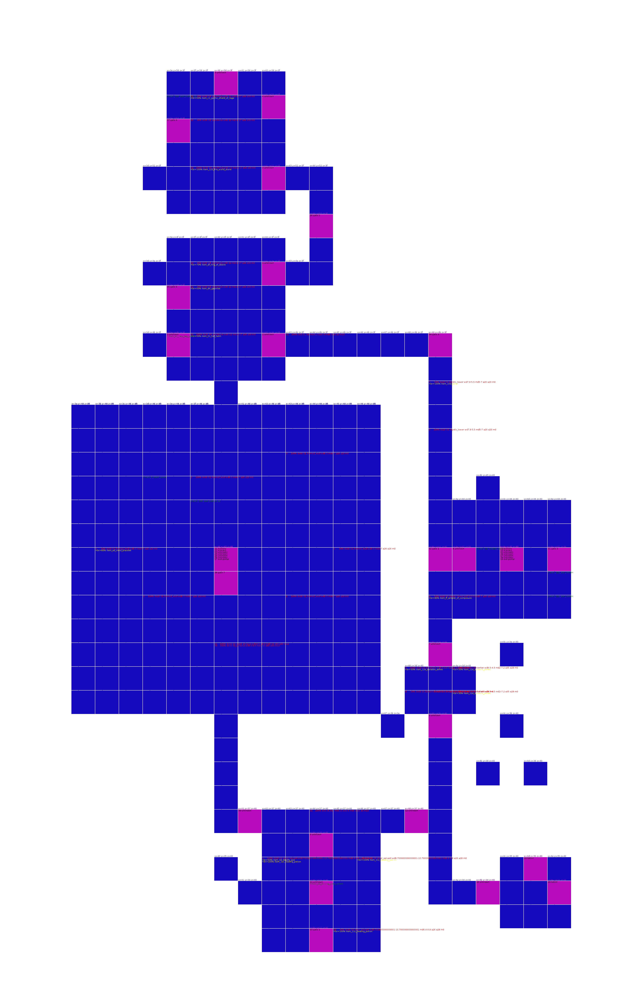
fire_world_phoenix_cave
Item Memory used 16
0 100% 0x80 02_fire_jinn wd6.2-6.2 md5.4-6.5 a20 a20 m0
1 100% 0x40 02_fire_jinn wd6.2-6.2 md5.4-6.5 a20 a20 m0
100% item_11c_healing_potion
2 100% 0x40 02_fire_jinn wd6.2-6.2 md5.4-6.5 a20 a20 m0
30% item_83_gauntlet
3 50% 0x80 02_fire_jinn wd6.2-6.2 md5.4-6.5 a20 a20 m0
30% item_98_steel_boots_of_resist
40% item_93_steel_boots_of_curing
4 50% 0x80 02_fire_jinn wd6.2-6.2 md5.4-6.5 a20 a20 m0
5 50% 0x40 02_fire_jinn wd6.2-6.2 md5.4-6.5 a20 a20 m0
100% item_11c_healing_potion
6 100% 0x80 06_fire_jinn wd6.2-6.2 md5.4-6.5 a20 a20 m0
10% item_a_rapier
100% item_11c_healing_potion
7 100% 0x40 06_fire_jinn wd6.2-6.2 md5.4-6.5 a20 a20 m0
60% item_7_fiery_long_sword
8 100% 0x40 06_fire_jinn wd6.2-6.2 md5.4-6.5 a20 a20 m0
100% item_11c_healing_potion
9 100% 0x40 06_fire_jinn wd6.2-6.2 md5.4-6.5 a20 a20 m0
20% item_c_shadow_blade
a 100% 0x80 05_armored_jinn wd10-9.5 md5.4-14 a25 a25 m0
b 100% 0x80 05_armored_jinn wd10-9.5 md5.4-14 a25 a25 m0
30% item_123_fire_world_stone
c 100% 0x40 05_armored_jinn wd10-9.5 md5.4-14 a25 a25 m0
80% item_123_fire_world_stone
d 100% 0x40 06_fire_jinn wd6.2-6.2 md5.4-6.5 a20 a20 m0
50% item_11c_healing_potion
e 100% 0x80 05_armored_jinn wd10-9.5 md5.4-14 a25 a25 m0
f 100% 0x40 04_jinn_lord wd8-9.4 md5.4-14 a30 a30 m0
40% item_c5_summoner_ring_of_fire
10% item_101_amulet_of_resist
100% item_123_fire_world_stone
10 100% 0x80 06_fire_jinn wd6.2-6.2 md5.4-6.5 a20 a20 m0
100% item_11c_healing_potion
11 50% 0x40 06_fire_jinn wd6.2-6.2 md5.4-6.5 a20 a20 m0
70% item_16_guardian_broad_sword
12 50% 0x40 06_fire_jinn wd6.2-6.2 md5.4-6.5 a20 a20 m0
13 50% 0x80 06_fire_jinn wd6.2-6.2 md5.4-6.5 a20 a20 m0
100% item_11c_healing_potion
14 50% 0x80 06_fire_jinn wd6.2-6.2 md5.4-6.5 a20 a20 m0
0 item_aa_fiery_large_shield
1 item_67_plate_mail_of_curing
2 item_123_fire_world_stone
3 item_fd_amulet_of_guardian
4 item_54_fiery_full_helm
5 item_127_acid_vaccine
6 item_12e_dorados_ashes
7 item_10a_cune
8 item_10a_cune
9 item_10a_cune
a item_10a_cune
b item_10a_cune
c item_10a_cune
d item_10a_cune
e item_10a_cune
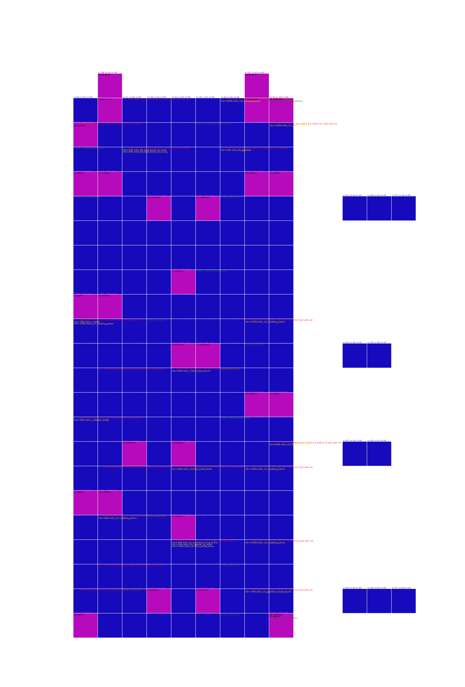
fire_world_ashen_cavern
Item Memory used 16
0 100% 0x50 01_berzerker wd6.5-4.5 md2-7.2 a35 a28 m0
1 100% 0x50 01_berzerker wd6.5-4.5 md2-7.2 a35 a28 m0
30% item_126_bottle_of_light
2 100% 0x50 01_berzerker wd6.5-4.5 md2-7.2 a35 a28 m0
20% item_96_swift_steel_boots
100% item_126_bottle_of_light
3 100% 0x50 00_bone_demon wd8.8-2.8000000000000003 md1.9000000000000001-7.9 a20 a22 m0
100% item_10a_cune
4 100% 0x50 00_bone_demon wd8.8-2.8000000000000003 md1.9000000000000001-7.9 a20 a22 m0
100% item_10a_cune
5 100% 0x50 01_berzerker wd6.5-4.5 md2-7.2 a35 a28 m0
6 50% 0x50 01_berzerker wd6.5-4.5 md2-7.2 a35 a28 m0
30% item_126_bottle_of_light
7 50% 0x50 01_berzerker wd6.5-4.5 md2-7.2 a35 a28 m0
50% item_4c_devil_crown
8 25% 0x50 00_bone_demon wd8.8-2.8000000000000003 md1.9000000000000001-7.9 a20 a22 m0
9 100% 0x50 04_zygote wd8.5-9.8 md4.4-7.9 a40 a36 m0
a 100% 0x50 04_zygote wd8.5-9.8 md4.4-7.9 a40 a36 m0
b 100% 0x50 04_zygote wd8.5-9.8 md4.4-7.9 a40 a36 m0
c 15% 0x5 0d_damned_angel wd6-7 md25-25 a30 a40 m0
40% item_44_bow_gun
d 100% 0x50 05_horned_skull wd6-5 md4-7 a26 a26 m0
20% item_d8_ring_of_poison
e 100% 0x50 05_horned_skull wd6-5 md4-7 a26 a26 m0
40% item_cf_soul_ring
f 100% 0x50 05_horned_skull wd6-5 md4-7 a26 a26 m0
10 50% 0x50 04_zygote wd8.5-9.8 md4.4-7.9 a40 a36 m0
11 50% 0x50 04_zygote wd8.5-9.8 md4.4-7.9 a40 a36 m0
30% item_6f_plate_mail_of_protect
12 100% 0x50 0a_ruby_demon wd7-4 md2-4.800000000000001 a34 a27 m0
100% item_11f_anti_paralytic
13 100% 0x50 0a_ruby_demon wd7-4 md2-4.800000000000001 a34 a27 m0
100% item_11f_anti_paralytic
14 100% 0x50 09_cerberus wd6.5-8.5 md4.4-8.5 a30 a30 m0
100% item_110_fiery_key
15 100% 0x50 09_cerberus wd6.5-8.5 md4.4-8.5 a30 a30 m0
35% item_fe_deadly_amulet
16 50% 0x50 09_cerberus wd6.5-8.5 md4.4-8.5 a30 a30 m0
17 50% 0x50 09_cerberus wd6.5-8.5 md4.4-8.5 a30 a30 m0
40% item_b4_harden_tower_shield
20 100% 0x100 0c_ebony_knight wd9.700000000000001-12.5 md7.5-10.9 a70 a50 m14
100% item_1e_fiery_bastard_sword
0 item_84_gauntlet
1 item_11d_magic_potion
2 item_11d_magic_potion
3 item_14_crushing_broad_sword
4 item_c7_priest_ring_of_fire
6 item_10a_cune
7 item_131_flaming_key
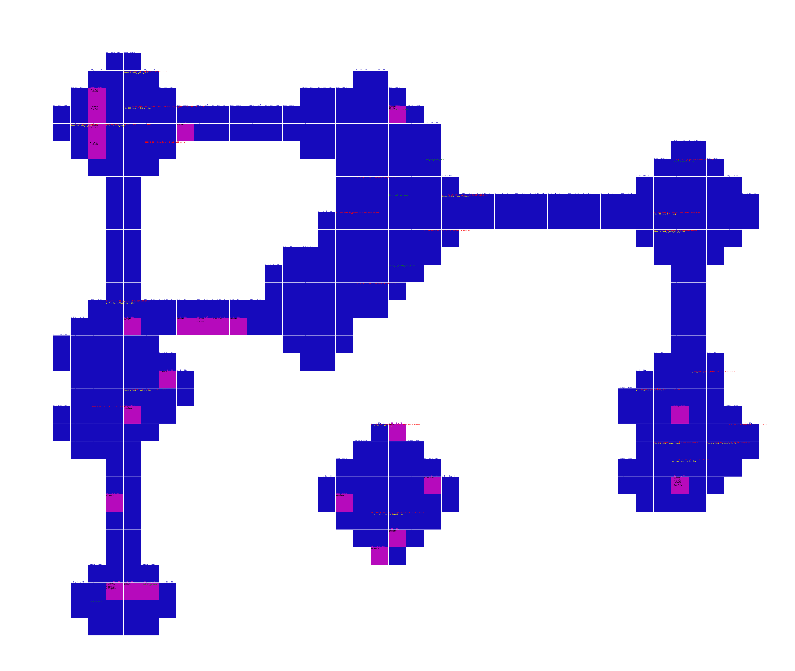
Water World
water_world_impure_pool_area
Item Memory used 16
0 100% 0x30 01_horned_slime wd8-7.800000000000001 md8.9-7.2 a14 a14 m0
1 100% 0x30 01_horned_slime wd8-7.800000000000001 md8.9-7.2 a14 a14 m0
100% item_123_fire_world_stone
2 100% 0x30 01_horned_slime wd8-7.800000000000001 md8.9-7.2 a14 a14 m0
100% item_10e_sacred_feather
3 100% 0x30 01_horned_slime wd8-7.800000000000001 md8.9-7.2 a14 a14 m0
4 100% 0x30 01_horned_slime wd8-7.800000000000001 md8.9-7.2 a14 a14 m0
5 100% 0x15 02_blood_brain wd8-8.8 md7.9-11.3 a14 a14 m0
6 50% 0x30 02_blood_brain wd8-8.8 md7.9-11.3 a14 a14 m0
7 50% 0x30 02_blood_brain wd8-8.8 md7.9-11.3 a14 a14 m0
100% item_10a_cune
8 50% 0x30 02_blood_brain wd8-8.8 md7.9-11.3 a14 a14 m0
9 30% 0x30 02_blood_brain wd8-8.8 md7.9-11.3 a14 a14 m0
100% item_10a_cune
a 100% 0x30 05_horned_slime wd8-7.800000000000001 md8.9-7.2 a14 a14 m0
50% item_123_fire_world_stone
b 100% 0x30 05_horned_slime wd8-7.800000000000001 md8.9-7.2 a14 a14 m0
100% item_123_fire_world_stone
c 100% 0x30 06_dweller wd7.5-8.200000000000001 md7.9-9.4 a18 a20 m0
100% item_11c_healing_potion
d 50% 0x30 05_horned_slime wd8-7.800000000000001 md8.9-7.2 a14 a14 m0
100% item_123_fire_world_stone
e 50% 0x30 05_horned_slime wd8-7.800000000000001 md8.9-7.2 a14 a14 m0
50% item_123_fire_world_stone
f 25% 0x30 06_dweller wd7.5-8.200000000000001 md7.9-9.4 a18 a20 m0
10 100% 0x30 0a_dweller wd7.5-8.200000000000001 md7.9-9.4 a18 a20 m0
50% item_11c_healing_potion
11 100% 0x30 0a_dweller wd7.5-8.200000000000001 md7.9-9.4 a18 a20 m0
12 100% 0x30 0a_dweller wd7.5-8.200000000000001 md7.9-9.4 a18 a20 m0
50% item_11c_healing_potion
13 100% 0x50 09_dementor wd8.9-7.5 md6.800000000000001-7.9 a30 a23 m0
80% item_80_metal_glove
100% item_127_acid_vaccine
14 50% 0x50 09_dementor wd8.9-7.5 md6.800000000000001-7.9 a30 a23 m0
80% item_37_frosty_morning_star
100% item_127_acid_vaccine
15 100% 0x40 0c_worm_face wd6-10 md7.9-4.800000000000001 a30 a30 m0
40% item_6c_caustic_plate_mail
16 100% 0x40 0c_worm_face wd6-10 md7.9-4.800000000000001 a30 a30 m0
20% item_9d_frosty_leg_guard
100% item_127_acid_vaccine
17 25% 0x30 0d_hatchlin wd11.8-6.2 md255-255 a20 a20 m0
100% item_cb_balance_ring_of_frost
18 100% 0x40 0c_worm_face wd6-10 md7.9-4.800000000000001 a30 a30 m0
100% item_12e_dorados_ashes
19 100% 0x40 0c_worm_face wd6-10 md7.9-4.800000000000001 a30 a30 m0
100% item_12e_dorados_ashes
1a 50% 0x40 0c_worm_face wd6-10 md7.9-4.800000000000001 a30 a30 m0
20% item_1f_frosty_bastard_sword
100% item_127_acid_vaccine
1b 25% 0x40 0c_worm_face wd6-10 md7.9-4.800000000000001 a30 a30 m0
100% item_120_divine_symbol
1c 25% 0x40 0c_worm_face wd6-10 md7.9-4.800000000000001 a30 a30 m0
100% item_120_divine_symbol
30 100% 0x5 00_fat_mole_f wd0-0 md0-0 a0 a0 m24
0% item_127_acid_vaccine
31 100% 0x5 04_blank wd90-90 md90-90 a0 a0 m25
0 item_6_keenest_long_sword
1 item_12b_pitcher_of_nadya
2 item_114_floodgate_key
3 item_10a_cune
4 item_10a_cune
5 item_127_acid_vaccine
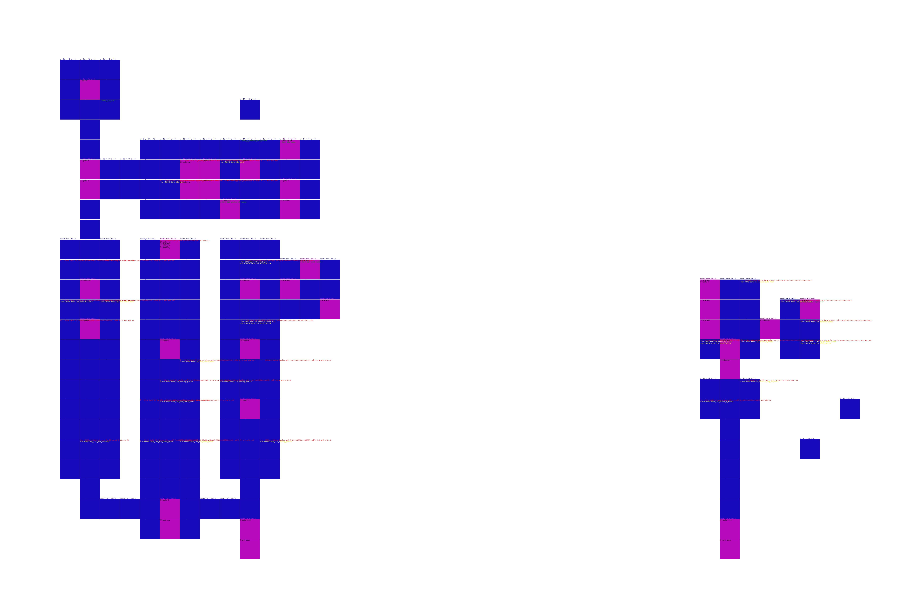
water_world_sunken_river_area
Item Memory used 15
0 100% 0x50 00_kabasaur wd7.7-9 md9.5-7.9 a40 a34 m0
100% item_114_floodgate_key
1 20% 0x50 00_kabasaur wd7.7-9 md9.5-7.9 a40 a34 m0
100% item_122_evil_eye
2 20% 0x50 00_kabasaur wd7.7-9 md9.5-7.9 a40 a34 m0
100% item_11f_anti_paralytic
3 100% 0x40 05_water_knight wd7.5-6.5 md7.9-8.9 a40 a36 m0
50% item_1f_frosty_bastard_sword
4 100% 0x70 05_water_knight wd7.5-6.5 md7.9-8.9 a40 a36 m0
20% item_6b_frosty_plate_mail
40% item_9f_caustic_leg_guard
5 100% 0x40 04_kabasaur wd7.7-9 md9.5-7.9 a40 a34 m0
50% item_f_broad_sword
6 100% 0x40 04_kabasaur wd7.7-9 md9.5-7.9 a40 a34 m0
50% item_27_great_sword
20% item_122_evil_eye
7 100% 0x40 04_kabasaur wd7.7-9 md9.5-7.9 a40 a34 m0
50% item_e9_bracelet_of_movement
100% item_11f_anti_paralytic
8 50% 0x40 04_kabasaur wd7.7-9 md9.5-7.9 a40 a34 m0
10% item_da_sorcerer_ring_of_poison
100% item_122_evil_eye
9 50% 0x40 04_kabasaur wd7.7-9 md9.5-7.9 a40 a34 m0
40% item_ca_summoner_ring_of_frost
30% item_122_evil_eye
a 30% 0x40 05_water_knight wd7.5-6.5 md7.9-8.9 a40 a36 m0
50% item_11c_healing_potion
b 30% 0x40 05_water_knight wd7.5-6.5 md7.9-8.9 a40 a36 m0
50% item_11c_healing_potion
c 30% 0x40 05_water_knight wd7.5-6.5 md7.9-8.9 a40 a36 m0
100% item_115_mermaid_key
0 item_10a_cune
1 item_cd_sorcerer_ring_of_frost
2 item_b6_caustic_tower_shield
3 item_ef_deadly_bracelet
4 item_10a_cune
5 item_136_soul_pod_5_sp
6 item_136_soul_pod_5_sp
7 item_139_soul_pod_14_sp
1c item_114_floodgate_key
1d item_114_floodgate_key
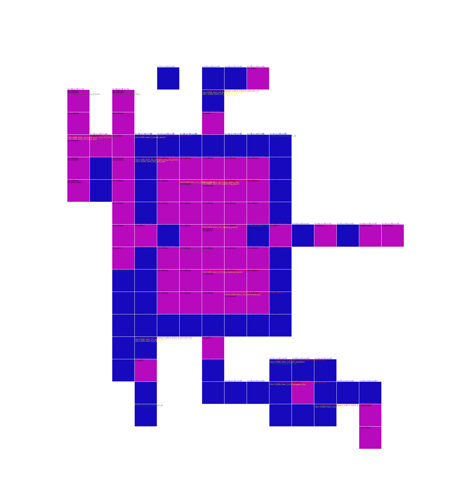
water_world_white_rain_area
Item Memory used 16
0 100% 0x30 00_winged_worm wd4.5-3.5 md7.9-8.9 a52 a45 m0
60% item_3b_giant_axe
1 100% 0x30 00_winged_worm wd4.5-3.5 md7.9-8.9 a52 a45 m0
50% item_100_amulet_of_curing
2 100% 0x30 00_winged_worm wd4.5-3.5 md7.9-8.9 a52 a45 m0
60% item_9d_frosty_leg_guard
3 50% 0x60 00_winged_worm wd4.5-3.5 md7.9-8.9 a52 a45 m0
100% item_12e_dorados_ashes
4 50% 0x30 00_winged_worm wd4.5-3.5 md7.9-8.9 a52 a45 m0
5 50% 0x30 00_winged_worm wd4.5-3.5 md7.9-8.9 a52 a45 m0
100% item_12e_dorados_ashes
6 50% 0x30 00_winged_worm wd4.5-3.5 md7.9-8.9 a52 a45 m0
100% item_10e_sacred_feather
7 100% 0x60 04_dragon_turtle wd7.800000000000001-9 md17.5-6.9 a52 a45 m0
30% item_bc_gothic_shield_of_resist
50% item_a8_harden_large_shield
80% item_a3_small_shield
8 100% 0x60 04_dragon_turtle wd7.800000000000001-9 md17.5-6.9 a52 a45 m0
20% item_6b_frosty_plate_mail
100% item_127_acid_vaccine
9 25% 0x90 04_dragon_turtle wd7.800000000000001-9 md17.5-6.9 a52 a45 m0
100% item_127_acid_vaccine
20 100% 0x10 05_magi_magus wd8-12 md15.5-36.2 a150 a170 m19
20% item_d_shadow_wolf
20% item_24_dark_sword
100% item_ee_mighty_ring
0 item_55_great_helm
1 item_de_caustic_sorcerer_ring
2 item_136_soul_pod_5_sp
3 item_138_soul_pod_29_sp
4 item_136_soul_pod_5_sp
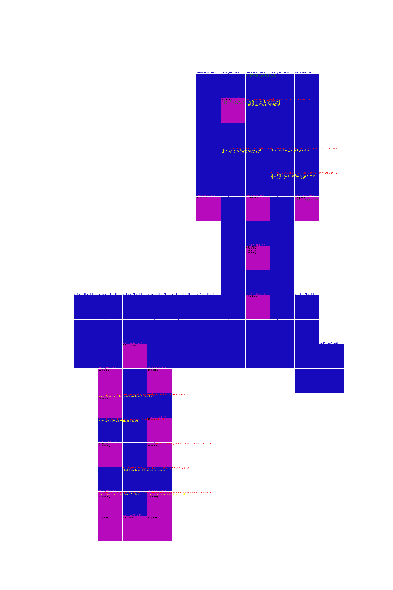
water_world_watery_labyrinth_area
Item Memory used 16
0 100% 0x30 00_kabasaur wd7.7-9 md9.5-7.9 a40 a34 m0
40% item_38_axe
1 100% 0x30 02_horned_slime wd8-7.800000000000001 md8.9-7.2 a14 a14 m0
50% item_11c_healing_potion
2 100% 0x30 00_kabasaur wd7.7-9 md9.5-7.9 a40 a34 m0
40% item_18_bastard_sword
3 100% 0x30 02_horned_slime wd8-7.800000000000001 md8.9-7.2 a14 a14 m0
50% item_11c_healing_potion
4 100% 0x30 05_blood_brain wd8-8.8 md7.9-11.3 a14 a14 m0
5 100% 0x30 05_blood_brain wd8-8.8 md7.9-11.3 a14 a14 m0
100% item_126_bottle_of_light
6 50% 0x30 05_blood_brain wd8-8.8 md7.9-11.3 a14 a14 m0
7 50% 0x30 05_blood_brain wd8-8.8 md7.9-11.3 a14 a14 m0
100% item_126_bottle_of_light
8 100% 0x60 04_great_frog wd8.8-11.9 md8.9-9.5 a8 a8 m0
80% item_43_warrior_bow
100% item_11c_healing_potion
9 100% 0x60 04_great_frog wd8.8-11.9 md8.9-9.5 a8 a8 m0
80% item_53_harden_full_helm
100% item_52_full_helm_of_curing
a 100% 0x60 04_great_frog wd8.8-11.9 md8.9-9.5 a8 a8 m0
70% item_69_magical_plate_mail
100% item_11c_healing_potion
b 100% 0x40 09_koazul wd7.800000000000001-8.6 md18-41.5 a38 a40 m0
c 100% 0x40 09_koazul wd7.800000000000001-8.6 md18-41.5 a38 a40 m0
100% item_10a_cune
d 100% 0x40 09_koazul wd7.800000000000001-8.6 md18-41.5 a38 a40 m0
100% item_4e_helm
e 50% 0x40 09_koazul wd7.800000000000001-8.6 md18-41.5 a38 a40 m0
100% item_10a_cune
f 50% 0x40 09_koazul wd7.800000000000001-8.6 md18-41.5 a38 a40 m0
100% item_10a_cune
10 50% 0x30 0a_horned_slime wd8-7.800000000000001 md8.9-7.2 a14 a14 m0
50% item_11c_healing_potion
11 50% 0x30 0a_horned_slime wd8-7.800000000000001 md8.9-7.2 a14 a14 m0
40% item_dc_caustic_ring
12 100% 0x30 0c_gaze_hopper wd7.9-7 md10-10.200000000000001 a24 a25 m0
13 100% 0x30 0c_gaze_hopper wd7.9-7 md10-10.200000000000001 a24 a25 m0
14 100% 0x30 0c_gaze_hopper wd7.9-7 md10-10.200000000000001 a24 a25 m0
80% item_d3_dark_ring
15 100% 0x30 0d_slasher wd7.5-6.5 md7.9-8.9 a40 a40 m0
40% item_95_caustic_steel_boots
16 100% 0x30 0d_slasher wd7.5-6.5 md7.9-8.9 a40 a40 m0
100% item_11c_healing_potion
17 100% 0x30 0e_manna_python wd9-10 md11.600000000000001-9.4 a32 a27 m0
18 100% 0x30 0e_manna_python wd9-10 md11.600000000000001-9.4 a32 a27 m0
30% item_ca_summoner_ring_of_frost
19 100% 0x30 0e_manna_python wd9-10 md11.600000000000001-9.4 a32 a27 m0
40% item_c9_summoner_ring_of_frost
1a 100% 0x30 0c_gaze_hopper wd7.9-7 md10-10.200000000000001 a24 a25 m0
100% item_10a_cune
1b 50% 0x30 0c_gaze_hopper wd7.9-7 md10-10.200000000000001 a24 a25 m0
100% item_10a_cune
1c 50% 0x40 0d_slasher wd7.5-6.5 md7.9-8.9 a40 a40 m0
30% item_dd_caustic_priest_ring
1d 50% 0x40 0d_slasher wd7.5-6.5 md7.9-8.9 a40 a40 m0
100% item_11c_healing_potion
1e 50% 0x40 0d_slasher wd7.5-6.5 md7.9-8.9 a40 a40 m0
50% item_3f_battle_axe
1f 50% 0x40 0d_slasher wd7.5-6.5 md7.9-8.9 a40 a40 m0
30% item_74_plate_mail_of_honor
0 item_10a_cune
1 item_10a_cune
2 item_ab_great_shield
3 item_10a_cune
4 item_10a_cune
5 item_10a_cune
6 item_139_soul_pod_14_sp
7 item_11c_healing_potion
8 item_127_acid_vaccine
9 item_127_acid_vaccine
a item_127_acid_vaccine
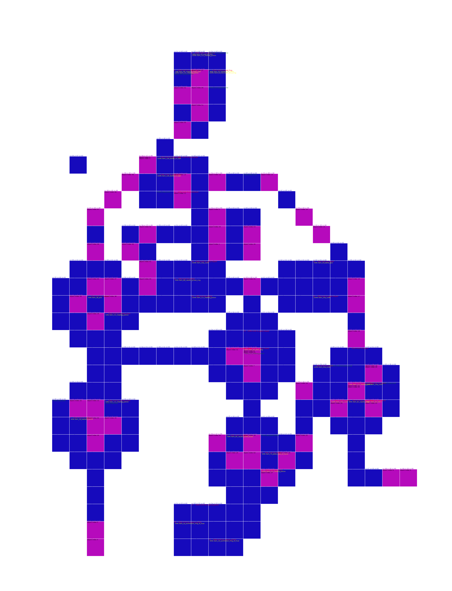
Monster World
monster_world_false_eye_area
Item Memory used 16
0 100% 0x60 00_night_howler wd5.2-6.5 md8.3-7.4 a34 a27 m0
100% item_10a_cune
1 100% 0x60 00_night_howler wd5.2-6.5 md8.3-7.4 a34 a27 m0
100% item_10a_cune
2 100% 0x60 00_night_howler wd5.2-6.5 md8.3-7.4 a34 a27 m0
100% item_10a_cune
3 50% 0x60 01_chirper wd5.9-7.9 md9.4-7 a24 a20 m0
100% item_125_dust_of_rage
4 100% 0x60 04_night_howler wd5.2-6.5 md8.3-7.4 a34 a27 m0
100% item_10a_cune
5 100% 0x60 04_night_howler wd5.2-6.5 md8.3-7.4 a34 a27 m0
100% item_10a_cune
6 100% 0x60 04_night_howler wd5.2-6.5 md8.3-7.4 a34 a27 m0
100% item_10a_cune
7 100% 0x60 04_night_howler wd5.2-6.5 md8.3-7.4 a34 a27 m0
100% item_10a_cune
8 100% 0x60 04_night_howler wd5.2-6.5 md8.3-7.4 a34 a27 m0
100% item_10a_cune
9 100% 0x60 04_night_howler wd5.2-6.5 md8.3-7.4 a34 a27 m0
100% item_10a_cune
a 100% 0x60 05_master_howler wd7.800000000000001-6.4 md3.2-9 a40 a30 m0
100% item_12a_young_dragon_gem
b 30% 0x60 09_freak wd7.2-6.9 md9.200000000000001-12 a78 a65 m0
50% item_40_deadly_battle_axe
c 30% 0x60 09_freak wd7.2-6.9 md9.200000000000001-12 a78 a65 m0
50% item_28_great_sword
d 30% 0x60 09_freak wd7.2-6.9 md9.200000000000001-12 a78 a65 m0
10% item_2f_mighty_great_sword
e 30% 0x60 09_freak wd7.2-6.9 md9.200000000000001-12 a78 a65 m0
30% item_3e_living_axe
f 30% 0x60 09_freak wd7.2-6.9 md9.200000000000001-12 a78 a65 m0
100% item_124_poison_vaccine
10 100% 0x60 08_hermit_crab wd5.7-6.7 md13.4-15.8 a40 a35 m0
100% item_e1_ring_of_dark_souls
11 100% 0x60 0c_saurian_warrior_a wd4.1000000000000005-7.2 md54-34.4 a36 a50 m0
12 100% 0x60 0c_saurian_warrior_a wd4.1000000000000005-7.2 md54-34.4 a36 a50 m0
40% item_87_swift_gauntlet
13 100% 0x60 0c_saurian_warrior_a wd4.1000000000000005-7.2 md54-34.4 a36 a50 m0
40% item_89_arm_guard
14 100% 0x60 0e_dinogon wd6.4-5.800000000000001 md4-10.200000000000001 a42 a38 m0
100% item_11f_anti_paralytic
15 100% 0x60 0e_dinogon wd6.4-5.800000000000001 md4-10.200000000000001 a42 a38 m0
100% item_11f_anti_paralytic
16 100% 0x60 0d_saurian_warrior_b wd6.9-8.5 md54-34.4 a36 a50 m0
17 100% 0x60 0d_saurian_warrior_b wd6.9-8.5 md54-34.4 a36 a50 m0
18 20% 0x40 0d_saurian_warrior_b wd6.9-8.5 md54-34.4 a36 a50 m0
50% item_b7_tower_shield_of_balance
30 100% 0x10 02_lizard_servant wd15-15 md15-15 a24 a24 m30
31 100% 0x10 06_lizard_servant wd15-15 md15-15 a24 a24 m30
0 item_29_great_sword
1 item_ba_harden_gothic_shield
2 item_dd_caustic_priest_ring
3 item_136_soul_pod_5_sp
4 item_138_soul_pod_29_sp
5 item_e_shadow_tiger
6 item_11c_healing_potion
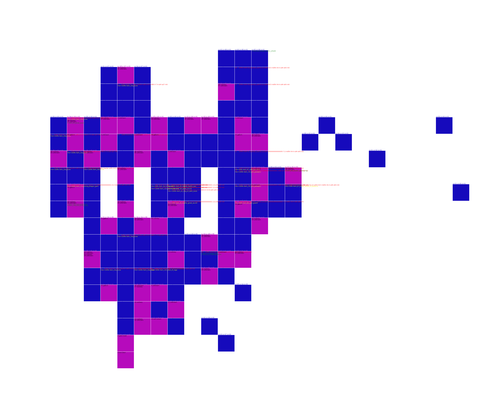
monster_world_screeching_area
Item Memory used 16
0 5% 0x90 04_king_hopper wd4.5-8.5 md1.4000000000000001-15.600000000000001 a59 a59 m0
50% item_f8_holy_bracelet
1 5% 0x90 04_king_hopper wd4.5-8.5 md1.4000000000000001-15.600000000000001 a59 a59 m0
20% item_f9_king_bracelet
2 5% 0x90 04_king_hopper wd4.5-8.5 md1.4000000000000001-15.600000000000001 a59 a59 m0
100% item_eb_bracelet_of_curing
3 100% 0x40 05_warden wd15-14 md16-18 a12 a16 m0
100% item_10a_cune
4 100% 0x40 05_warden wd15-14 md16-18 a12 a16 m0
100% item_10a_cune
5 100% 0x50 06_oblid wd7.800000000000001-8 md5.6000000000000005-3.3000000000000003 a43 a35 m0
6 100% 0x90 06_oblid wd7.800000000000001-8 md5.6000000000000005-3.3000000000000003 a43 a35 m0
100% item_11d_magic_potion
7 25% 0x50 06_oblid wd7.800000000000001-8 md5.6000000000000005-3.3000000000000003 a43 a35 m0
8 100% 0x40 08_oxelus wd5.5-6 md9-8 a63 a58 m0
30% item_41_keenest_battle_axe
9 100% 0x40 08_oxelus wd5.5-6 md9-8 a63 a58 m0
40% item_1d_crushing_bastard_sword
a 100% 0x30 08_oxelus wd5.5-6 md9-8 a63 a58 m0
40% item_2c_deadly_great_sword
b 100% 0x30 0a_cursed_demon wd3-2.4000000000000004 md4.5-3.9000000000000004 a60 a55 m0
100% item_11d_magic_potion
c 100% 0x30 0a_cursed_demon wd3-2.4000000000000004 md4.5-3.9000000000000004 a60 a55 m0
100% item_138_soul_pod_29_sp
d 50% 0x40 0a_cursed_demon wd3-2.4000000000000004 md4.5-3.9000000000000004 a60 a55 m0
10% item_c2_shinning_gothic_shield
e 50% 0x40 0a_cursed_demon wd3-2.4000000000000004 md4.5-3.9000000000000004 a60 a55 m0
30% item_ad_great_shield_of_balance
30% item_bd_gothic_shield_of_honor
f 100% 0x40 0d_death_serpent wd9.8-8.6 md4.800000000000001-4.3 a60 a55 m0
30% item_9b_harden_leg_guard
30% item_9e_leg_guard_of_protect
10 100% 0x40 0d_death_serpent wd9.8-8.6 md4.800000000000001-4.3 a60 a55 m0
50% item_8a_arm_guard_of_composure
11 25% 0x40 0d_death_serpent wd9.8-8.6 md4.800000000000001-4.3 a60 a55 m0
20% item_70_eternal_plate_mail
30% item_77_plate_mail_of_rage
21 100% 0x10 0e_necron wd7.5-7.800000000000001 md40.5-14.600000000000001 a85 a90 m22
100% item_e4_ring_of_dead_spirit
30 100% 0x10 01_auriel_c wd25-25 md49-58 a90 a110 m21
0 item_10a_cune
1 item_10a_cune
2 item_10a_cune
1c item_12a_young_dragon_gem
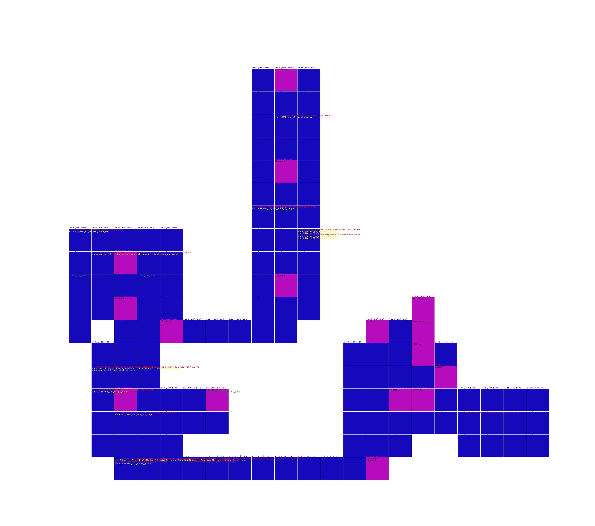
Illusion World
illusion_world_gloomy_domain
Item Memory used 16
0 100% 0x30 09_dark_fairy wd5.5-7.5 md33-60 a20 a24 m0
100% item_127_acid_vaccine
1 50% 0x30 09_dark_fairy wd5.5-7.5 md33-60 a20 a24 m0
100% item_127_acid_vaccine
2 50% 0x30 09_dark_fairy wd5.5-7.5 md33-60 a20 a24 m0
30% item_c6_ring_of_fire_resist
3 50% 0x30 0a_dark_bishop wd7.5-6.7 md31-31.200000000000003 a14 a35 m0
50% item_d5_dark_priest_ring
25% item_d0_holy_ring_of_resist
4 50% 0x30 0a_dark_bishop wd7.5-6.7 md31-31.200000000000003 a14 a35 m0
40% item_d1_holy_ring_of_priest
50% item_cf_soul_ring
5 50% 0x30 0a_dark_bishop wd7.5-6.7 md31-31.200000000000003 a14 a35 m0
5% item_e6_ring_of_drain
6 50% 0x40 09_dark_fairy wd5.5-7.5 md33-60 a20 a24 m0
100% item_120_divine_symbol
7 50% 0x40 09_dark_fairy wd5.5-7.5 md33-60 a20 a24 m0
8 50% 0x40 09_dark_fairy wd5.5-7.5 md33-60 a20 a24 m0
100% item_120_divine_symbol
9 100% 0x30 0c_maristella wd4.5-5 md5.800000000000001-7.800000000000001 a20 a30 m0
100% item_10a_cune
a 100% 0x30 0c_maristella wd4.5-5 md5.800000000000001-7.800000000000001 a20 a30 m0
100% item_10a_cune
b 100% 0x40 0d_deha wd7.2-6.800000000000001 md12.9-13.8 a40 a40 m38
c 50% 0x40 0d_deha wd7.2-6.800000000000001 md12.9-13.8 a40 a40 m38
40% item_73_full_plate
d 50% 0x40 0d_deha wd7.2-6.800000000000001 md12.9-13.8 a40 a40 m38
100% item_125_dust_of_rage
e 50% 0x40 0d_deha wd7.2-6.800000000000001 md12.9-13.8 a40 a40 m38
50% item_bb_gothic_shield
100% item_b5_tower_shield_of_protect
f 50% 0x40 0d_deha wd7.2-6.800000000000001 md12.9-13.8 a40 a40 m38
100% item_125_dust_of_rage
10 50% 0x30 0c_maristella wd4.5-5 md5.800000000000001-7.800000000000001 a20 a30 m0
100% item_10a_cune
11 50% 0x30 0c_maristella wd4.5-5 md5.800000000000001-7.800000000000001 a20 a30 m0
20 100% 0x20 02_dark_imp wd7.5-6.5 md60-60 a15 a20 m0
21 100% 0x20 00_red_puppet wd7.5-6.5 md60-60 a35 a40 m0
30% item_103_sorcerer_amulet
22 100% 0x20 01_dark_spirits wd9.5-6.5 md60-60 a35 a40 m0
30% item_86_gauntlet_of_resist
100% item_11f_anti_paralytic
23 100% 0x20 06_black_imp wd7.5-7.5 md60-60 a15 a20 m0
24 100% 0x20 04_dark_spirits wd7.5-6.5 md60-60 a35 a40 m0
50% item_f4_bracelet_of_composure
30% item_f5_deadly_bracelet
25 100% 0x20 05_dark_spirits wd9.5-6.5 md60-60 a35 a40 m0
100% item_11f_anti_paralytic
26 0% 0x30 08_ring_demon wd6.2-7.5 md4.800000000000001-7.9 a32 a40 m0
50% item_12e_dorados_ashes
27 0% 0x30 08_ring_demon wd6.2-7.5 md4.800000000000001-7.9 a32 a40 m0
100% item_12e_dorados_ashes
28 0% 0x40 0d_deha wd7.2-6.800000000000001 md12.9-13.8 a40 a40 m38
60% item_56_great_helm
30 100% 0x20 0e_blank wd0-0 md0-0 a0 a0 m39
2 item_125_dust_of_rage
3 item_10d_lamp
5 item_30_guardian_great_sword
6 item_106_amulet_of_recovery
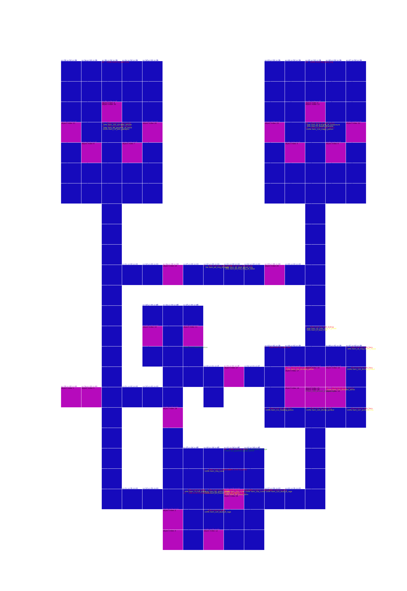
illusion_world_bewilderment_domain
Item Memory used 16
0 100% 0x20 01_gargaral wd7.9-7.9 md33-32 a26 a26 m0
100% item_10a_cune
1 100% 0x20 02_gordoral wd7.9-5 md12.200000000000001-35.2 a26 a26 m0
2 100% 0x20 02_gordoral wd7.9-5 md12.200000000000001-35.2 a26 a26 m0
10% item_107_star_amulet
3 100% 0x20 01_gargaral wd7.9-7.9 md33-32 a26 a26 m0
100% item_10a_cune
4 100% 0x20 01_gargaral wd7.9-7.9 md33-32 a26 a26 m0
5 100% 0x30 04_demon_warrior wd6.5-8 md7-9.5 a50 a50 m0
30% item_eb_bracelet_of_curing
6 100% 0x30 04_demon_warrior wd6.5-8 md7-9.5 a50 a50 m0
100% item_11c_healing_potion
7 100% 0x20 05_gargaral wd7.9-7.9 md33-32 a26 a26 m0
30% item_101_amulet_of_resist
8 100% 0x20 05_gargaral wd7.9-7.9 md33-32 a26 a26 m0
100% item_10a_cune
9 100% 0x20 06_gordoral wd7.9-5 md12.200000000000001-35.2 a26 a26 m0
10% item_f9_king_bracelet
a 100% 0x40 04_demon_warrior wd6.5-8 md7-9.5 a50 a50 m0
50% item_ec_bracelet_of_recovery
b 100% 0x40 04_demon_warrior wd6.5-8 md7-9.5 a50 a50 m0
100% item_11c_healing_potion
c 50% 0x40 04_demon_warrior wd6.5-8 md7-9.5 a50 a50 m0
40% item_44_bow_gun
d 50% 0x40 04_demon_warrior wd6.5-8 md7-9.5 a50 a50 m0
20% item_17_dragon_sword
e 50% 0x40 04_demon_warrior wd6.5-8 md7-9.5 a50 a50 m0
50% item_f1_sorcerer_bracelet
50% item_f2_priest_bracelet
f 100% 0x80 0a_rotting_face wd16-16 md12-17.5 a80 a88 m0
100% item_11d_magic_potion
10 100% 0x40 08_war_demon_1 wd8.5-8.1 md27.8-6.800000000000001 a45 a40 m0
40% item_53_harden_full_helm
11 100% 0x40 08_war_demon_1 wd8.5-8.1 md27.8-6.800000000000001 a45 a40 m0
50% item_15_keenest_broad_sword
12 100% 0x40 09_war_demon_2 wd8.200000000000001-7.2 md6.6000000000000005-7.9 a45 a40 m0
13 100% 0x10 0e_rotting_face wd16-16 md12-17.5 a80 a88 m0
100% item_11d_magic_potion
14 100% 0x30 0c_death_mage wd7-6.6000000000000005 md33.2-85.5 a75 a85 m0
15 100% 0x60 0c_death_mage wd7-6.6000000000000005 md33.2-85.5 a75 a85 m0
40% item_4b_wizard_crown
16 50% 0x30 0c_death_mage wd7-6.6000000000000005 md33.2-85.5 a75 a85 m0
30% item_d4_dark_ring
21 100% 0x40 08_war_demon_1 wd8.5-8.1 md27.8-6.800000000000001 a45 a40 m0
40% item_6d_shining_plate_mail
30% item_6e_dark_plate_mail
22 100% 0x40 09_war_demon_2 wd8.200000000000001-7.2 md6.6000000000000005-7.9 a45 a40 m0
50% item_26_righteous_sword
30 100% 0x10 00_gorgoral wd7.9-7.9 md33-32 a0 a0 m37
100% item_10a_cune
0% item_116_key_of_delusion
0 item_10a_cune
1 item_10a_cune
2 item_10a_cune
3 item_10a_cune
4 item_10a_cune
5 item_10a_cune
6 item_10a_cune
7 item_10a_cune
8 item_10a_cune
9 item_10a_cune
a item_10a_cune
b item_ba_harden_gothic_shield
c item_21_deadly_bastard_sword
d item_116_key_of_delusion
e item_116_key_of_delusion
f item_116_key_of_delusion
10 item_116_key_of_delusion
11 item_66_plate_mail_of_resist
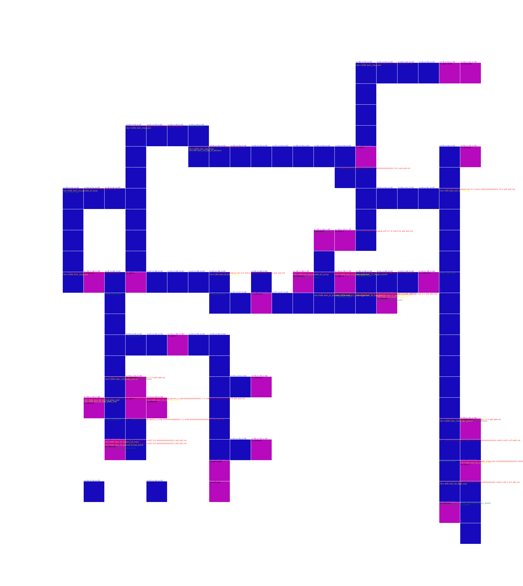
illusion_world_worship_domain
Item Memory used 16
0 100% 0x40 00_master_knight wd6.1000000000000005-7.2 md16.8-7.9 a62 a55 m0
1 100% 0x40 00_master_knight wd6.1000000000000005-7.2 md16.8-7.9 a62 a55 m0
50% item_1a_lethal_bastard_sword
2 100% 0x40 00_master_knight wd6.1000000000000005-7.2 md16.8-7.9 a62 a55 m0
3 50% 0x40 00_master_knight wd6.1000000000000005-7.2 md16.8-7.9 a62 a55 m0
50% item_20_shining_bastard_sword
4 50% 0x40 00_master_knight wd6.1000000000000005-7.2 md16.8-7.9 a62 a55 m0
50% item_1b_swift_bastard_sword
30% item_22_mighty_bastard_sword
5 100% 0x30 06_warpoor wd8-3.5 md9.5-10.200000000000001 a28 a30 m0
20% item_52_full_helm_of_curing
6 100% 0x30 06_warpoor wd8-3.5 md9.5-10.200000000000001 a28 a30 m0
20% item_65_harden_plate_mail
7 100% 0x30 06_warpoor wd8-3.5 md9.5-10.200000000000001 a28 a30 m0
100% item_116_key_of_delusion
8 100% 0x30 0a_warpoor wd8-3.5 md9.5-10.200000000000001 a28 a30 m0
30% item_c9_summoner_ring_of_frost
9 100% 0x30 0a_warpoor wd8-3.5 md9.5-10.200000000000001 a28 a30 m0
50% item_11d_magic_potion
a 100% 0x30 0a_warpoor wd8-3.5 md9.5-10.200000000000001 a28 a30 m0
100% item_124_poison_vaccine
b 100% 0x30 0a_warpoor wd8-3.5 md9.5-10.200000000000001 a28 a30 m0
50% item_11d_magic_potion
c 100% 0x30 0a_warpoor wd8-3.5 md9.5-10.200000000000001 a28 a30 m0
100% item_11c_healing_potion
d 50% 0x30 0a_warpoor wd8-3.5 md9.5-10.200000000000001 a28 a30 m0
10% item_d8_ring_of_poison
20% item_dc_caustic_ring
e 30% 0x30 0a_warpoor wd8-3.5 md9.5-10.200000000000001 a28 a30 m0
20% item_d7_ring_of_poison
f 30% 0x30 0a_warpoor wd8-3.5 md9.5-10.200000000000001 a28 a30 m0
30% item_cc_priest_ring_of_frost
10 100% 0x30 09_cross_breed wd12.5-4 md34.6-41.2 a25 a30 m0
100% item_120_divine_symbol
11 100% 0x30 09_cross_breed wd12.5-4 md34.6-41.2 a25 a30 m0
100% item_126_bottle_of_light
12 100% 0x30 09_cross_breed wd12.5-4 md34.6-41.2 a25 a30 m0
30% item_102_mind_amulet
40% item_105_amulet_of_balance
13 50% 0x30 09_cross_breed wd12.5-4 md34.6-41.2 a25 a30 m0
20% item_103_sorcerer_amulet
100% item_126_bottle_of_light
14 50% 0x30 09_cross_breed wd12.5-4 md34.6-41.2 a25 a30 m0
20% item_104_priest_amulet
100% item_120_divine_symbol
21 100% 0x5 04_wildowess wd6.6000000000000005-8.4 md11.200000000000001-40 a150 a170 m28
40% item_da_sorcerer_ring_of_poison
22 100% 0x10 01_gorthaur wd8.5-7 md6-18 a30 a36 m27
50% item_e0_ring_of_ice
23 100% 0x5 08_fester wd12-5.6000000000000005 md5.800000000000001-57.900000000000006 a50 a60 m29
80% item_f7_priest_bracelet
30 100% 0x80 02_fat_mole_d wd0-0 md0-0 a0 a0 m26
0 item_88_deadly_gauntlet
1 item_bb_gothic_shield
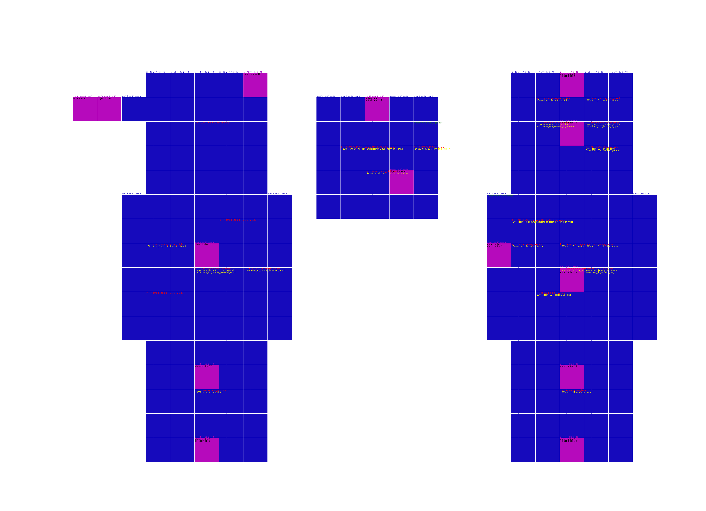
illusion_world_dream_domain
Item Memory used 9
0 100% 0x30 00_dark_spirits wd5.5-6.5 md99.9-99.9 a35 a40 m0
20% item_f0_guardian_bracelet
50% item_f4_bracelet_of_composure
100% item_122_evil_eye
1 100% 0x30 00_dark_spirits wd5.5-6.5 md99.9-99.9 a35 a40 m0
10% item_57_harden_great_helm
30% item_56_great_helm
100% item_10e_sacred_feather
2 100% 0x30 00_dark_spirits wd5.5-6.5 md99.9-99.9 a35 a40 m0
10% item_45_fiery_bow_gun
100% item_128_spirit_book
20 100% 0x10 01_disguise wd10.8-8.200000000000001 md60-24 a90 a110 m20
60% item_108_amulet_of_winter
100% item_59_mystic_great_helm
0 item_11f_anti_paralytic
1 item_139_soul_pod_14_sp
2 item_138_soul_pod_29_sp
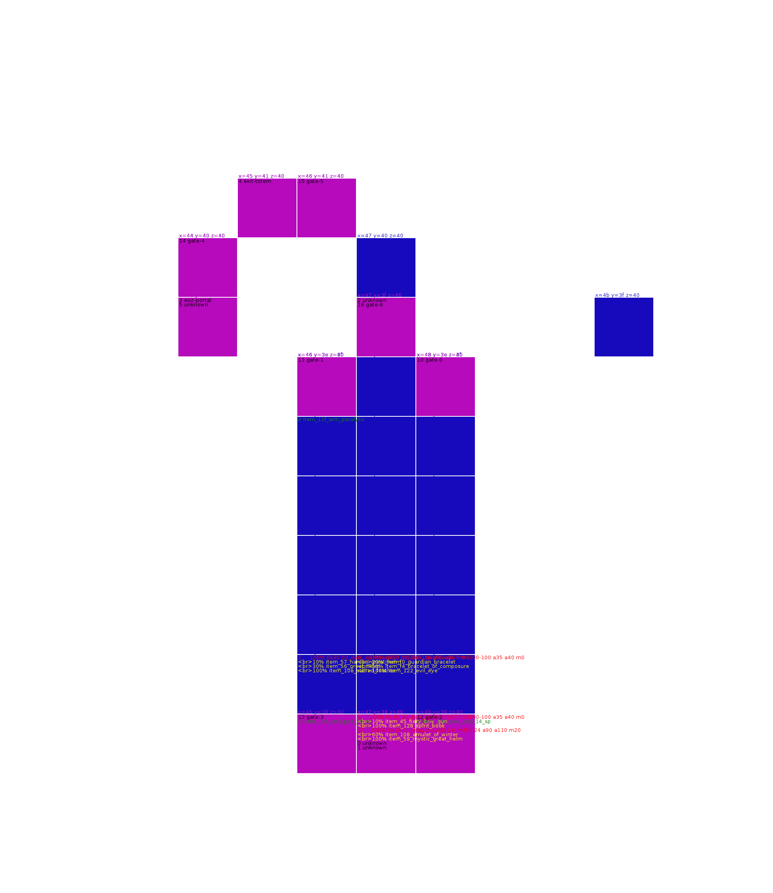
Death World
death_world_dark_castle_layer
Item Memory used 16
0 100% 0x30 00_hell_hunter wd6.800000000000001-7 md4.6000000000000005-7.2 a0 a0 m0
1 100% 0x30 00_hell_hunter wd6.800000000000001-7 md4.6000000000000005-7.2 a0 a0 m0
30% item_43_warrior_bow
2 100% 0x30 00_hell_hunter wd6.800000000000001-7 md4.6000000000000005-7.2 a0 a0 m0
100% item_10a_cune
3 50% 0x80 02_karasu wd6.2-6.5 md7.2-7.9 a69 a65 m0
20% item_107_star_amulet
100% item_128_spirit_book
4 50% 0x10 02_karasu wd6.2-6.5 md7.2-7.9 a69 a65 m0
30% item_f5_deadly_bracelet
100% item_128_spirit_book
5 100% 0x30 05_armored_warrior wd7-8 md4-4 a85 a60 m0
6 100% 0x30 05_armored_warrior wd7-8 md4-4 a85 a60 m0
100% item_10a_cune
7 100% 0x30 06_armored_slayer wd6-7.800000000000001 md7.4-8.200000000000001 a120 a90 m0
10% item_b8_tower_shield_of_resist
50% item_11c_healing_potion
8 100% 0x30 06_armored_slayer wd6-7.800000000000001 md7.4-8.200000000000001 a120 a90 m0
20% item_8b_deadly_arm_guard
9 100% 0x30 06_armored_slayer wd6-7.800000000000001 md7.4-8.200000000000001 a120 a90 m0
30% item_74_plate_mail_of_honor
a 50% 0x30 06_armored_slayer wd6-7.800000000000001 md7.4-8.200000000000001 a120 a90 m0
30% item_75_harden_full_plate
b 50% 0x30 06_armored_slayer wd6-7.800000000000001 md7.4-8.200000000000001 a120 a90 m0
50% item_97_steel_boots_of_balance
c 100% 0x30 04_tree_ogre wd5-7.2 md10-15.5 a69 a69 m0
100% item_10a_cune
d 100% 0x30 04_tree_ogre wd5-7.2 md10-15.5 a69 a69 m0
100% item_11c_healing_potion
e 50% 0x30 04_tree_ogre wd5-7.2 md10-15.5 a69 a69 m0
100% item_128_spirit_book
f 50% 0x30 04_tree_ogre wd5-7.2 md10-15.5 a69 a69 m0
100% item_7f_metal_glove
10 100% 0x30 09_armored_warrior wd7-8 md4-4 a85 a60 m0
5% item_59_mystic_great_helm
11 100% 0x30 09_armored_warrior wd7-8 md4-4 a85 a60 m0
50% item_11c_healing_potion
12 100% 0x30 0a_armored_slayer wd6-7.800000000000001 md7.4-8.200000000000001 a120 a90 m0
13 100% 0x30 0a_armored_slayer wd6-7.800000000000001 md7.4-8.200000000000001 a120 a90 m0
30% item_2d_keenest_great_sword
14 50% 0x30 09_armored_warrior wd7-8 md4-4 a85 a60 m0
30% item_2e_crushing_great_sword
15 50% 0x30 0a_armored_slayer wd6-7.800000000000001 md7.4-8.200000000000001 a120 a90 m0
50% item_af_dark_great_shield
20 100% 0x30 08_armored_guardian wd7.9-6.9 md27-7 a100 a80 m36
100% item_129_sealed_sword_stone
0 item_f6_harden_bracelet
1 item_10a_cune
2 item_139_soul_pod_14_sp
3 item_10a_cune
4 item_10a_cune
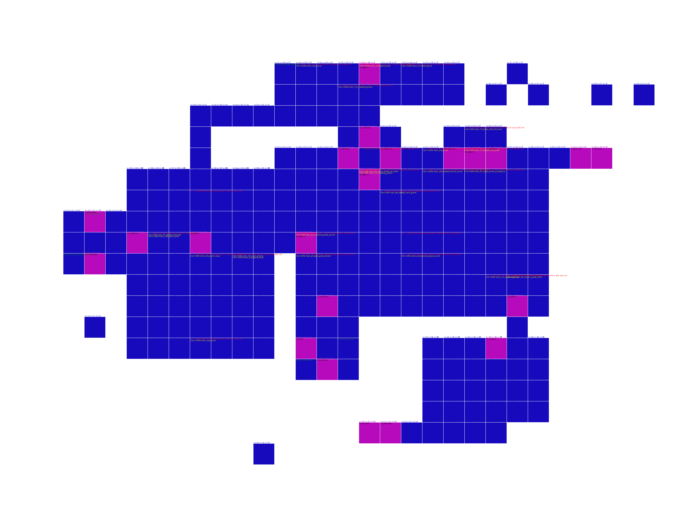
death_world_gate_of_the_dead
Item Memory used 15
0 100% 0x40 01_doriwi wd7-7 md12-8.200000000000001 a180 a200 m0
20% item_df_ring_of_desire
1 100% 0x40 01_doriwi wd7-7 md12-8.200000000000001 a180 a200 m0
20% item_e0_ring_of_ice
2 100% 0x40 02_bone_wolf wd7-3 md99.9-9 a225 a220 m0
100% item_128_spirit_book
3 100% 0x40 06_hell_warrior wd9-10 md4-8 a230 a200 m0
20% item_72_holy_plate_mail
4 100% 0x40 06_hell_warrior wd9-10 md4-8 a230 a200 m0
20% item_b0_deadly_great_shield
5 100% 0x40 06_hell_warrior wd9-10 md4-8 a230 a200 m0
5% item_c3_holy_gothic_shield
20% item_c2_shinning_gothic_shield
6 100% 0x40 05_doriwi wd7-7 md12-8.200000000000001 a180 a200 m0
20% item_e1_ring_of_dark_souls
7 100% 0x40 05_doriwi wd7-7 md12-8.200000000000001 a180 a200 m0
50% item_ef_deadly_bracelet
8 100% 0x40 05_doriwi wd7-7 md12-8.200000000000001 a180 a200 m0
20% item_fa_moon_bracelet
9 100% 0x40 05_doriwi wd7-7 md12-8.200000000000001 a180 a200 m0
40% item_f0_guardian_bracelet
a 100% 0x40 08_wyvern wd8-12 md5.4-19 a75 a70 m0
50% item_11c_healing_potion
b 100% 0x40 08_wyvern wd8-12 md5.4-19 a75 a70 m0
50% item_10e_sacred_feather
c 100% 0x50 08_wyvern wd8-12 md5.4-19 a75 a70 m0
d 100% 0x40 0a_bone_wolf wd7-3 md99.9-9 a225 a220 m0
100% item_128_spirit_book
e 100% 0x40 0a_bone_wolf wd7-3 md99.9-9 a225 a220 m0
f 100% 0x40 0a_bone_wolf wd7-3 md99.9-9 a225 a220 m0
100% item_128_spirit_book
10 100% 0x60 0d_blood_bone wd7-4 md6-5 a0 a0 m0
75% item_13_broad_sword
11 100% 0x60 0d_blood_bone wd7-4 md6-5 a0 a0 m0
30% item_31_blood_sword
12 100% 0x60 0d_blood_bone wd7-4 md6-5 a0 a0 m0
60% item_29_great_sword
13 100% 0x60 0d_blood_bone wd7-4 md6-5 a0 a0 m0
50% item_2a_swift_great_sword
14 100% 0x60 0d_blood_bone wd7-4 md6-5 a0 a0 m0
20 100% 0x5 0c_hollow_mage wd8.1-5 md99.9-99.9 a44 a144 m23
80% item_109_endless_amulet
0 item_be_gothic_shield_of_balance
1 item_137_soul_pod_53_sp
2 item_136_soul_pod_5_sp
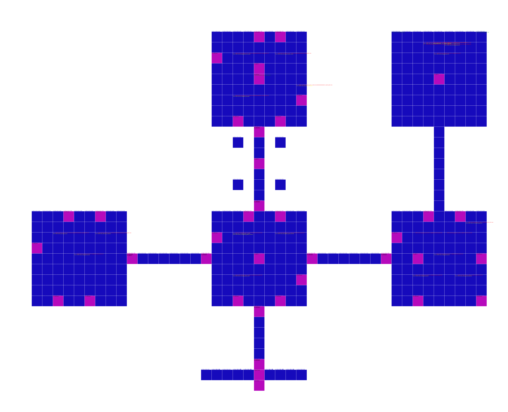
death_world_lingering_curse_layer
Item Memory used 16
0 100% 0x30 01_stack_eyes wd8.8-15.200000000000001 md12.5-10.600000000000001 a60 a72 m0
1 100% 0x30 01_stack_eyes wd8.8-15.200000000000001 md12.5-10.600000000000001 a60 a72 m0
50% item_12e_dorados_ashes
2 100% 0x30 01_stack_eyes wd8.8-15.200000000000001 md12.5-10.600000000000001 a60 a72 m0
100% item_126_bottle_of_light
3 100% 0x30 01_stack_eyes wd8.8-15.200000000000001 md12.5-10.600000000000001 a60 a72 m0
100% item_126_bottle_of_light
4 100% 0x30 01_stack_eyes wd8.8-15.200000000000001 md12.5-10.600000000000001 a60 a72 m0
100% item_12e_dorados_ashes
5 100% 0x40 05_unknown_g wd6-5 md12.600000000000001-23 a62 a92 m0
6 100% 0x40 05_unknown_g wd6-5 md12.600000000000001-23 a62 a92 m0
7 100% 0x40 05_unknown_g wd6-5 md12.600000000000001-23 a62 a92 m0
8 100% 0x20 08_apocrypha wd4-11 md60-60 a180 a220 m0
10% item_e3_ring_of_seal
50% item_ca_summoner_ring_of_frost
9 100% 0x20 09_descrypha wd7-10 md60-17 a180 a220 m0
10% item_e0_ring_of_ice
100% item_128_spirit_book
a 100% 0x20 08_apocrypha wd4-11 md60-60 a180 a220 m0
20% item_df_ring_of_desire
40% item_cc_priest_ring_of_frost
100% item_11d_magic_potion
b 100% 0x20 09_descrypha wd7-10 md60-17 a180 a220 m0
10% item_c8_sorcerer_ring_of_fire
c 50% 0x20 08_apocrypha wd4-11 md60-60 a180 a220 m0
100% item_11d_magic_potion
d 50% 0x20 09_descrypha wd7-10 md60-17 a180 a220 m0
30% item_c6_ring_of_fire_resist
e 100% 0x30 0c_old_face wd5-4 md21-23 a120 a110 m0
5% item_78_knight_plate_mail
40% item_73_full_plate
f 100% 0x30 0c_old_face wd5-4 md21-23 a120 a110 m0
15% item_76_god_plate
10 100% 0x30 0c_old_face wd5-4 md21-23 a120 a110 m0
10% item_5a_holy_great_helm
11 100% 0x30 0c_old_face wd5-4 md21-23 a120 a110 m0
10% item_8c_master_arm_guard
60% item_92_steel_boots_of_resist
12 100% 0x30 0c_old_face wd5-4 md21-23 a120 a110 m0
100% item_10e_sacred_feather
13 100% 0x30 0c_old_face wd5-4 md21-23 a120 a110 m0
10% item_e5_ring_of_rage
100% item_11d_magic_potion
14 100% 0x30 0c_old_face wd5-4 md21-23 a120 a110 m0
30% item_da_sorcerer_ring_of_poison
50% item_11d_magic_potion
15 100% 0x30 0c_old_face wd5-4 md21-23 a120 a110 m0
40% item_bd_gothic_shield_of_honor
16 100% 0x30 0c_old_face wd5-4 md21-23 a120 a110 m0
10% item_bf_master_gothic_shield
60% item_a5_shield_of_resist
17 100% 0x30 0c_old_face wd5-4 md21-23 a120 a110 m0
10% item_c0_gothic_shield_of_power
22 100% 0x20 0a_old_face wd6-15 md21-22 a200 a240 m0
10% item_e6_ring_of_drain
30% item_e2_black_ring
100% item_d3_dark_ring
23 100% 0x20 0d_bugler wd7-7 md6-35.6 a170 a180 m0
100% item_122_evil_eye
30 100% 0x20 00_unknown_e wd7-6.2 md10-10 a0 a0 m32
31 100% 0x20 04_blank wd90-90 md90-90 a0 a0 m31
0 item_122_evil_eye
1 item_112_key_of_knowledge
2 item_128_spirit_book
3 item_d6_dark_sorcerer_ring
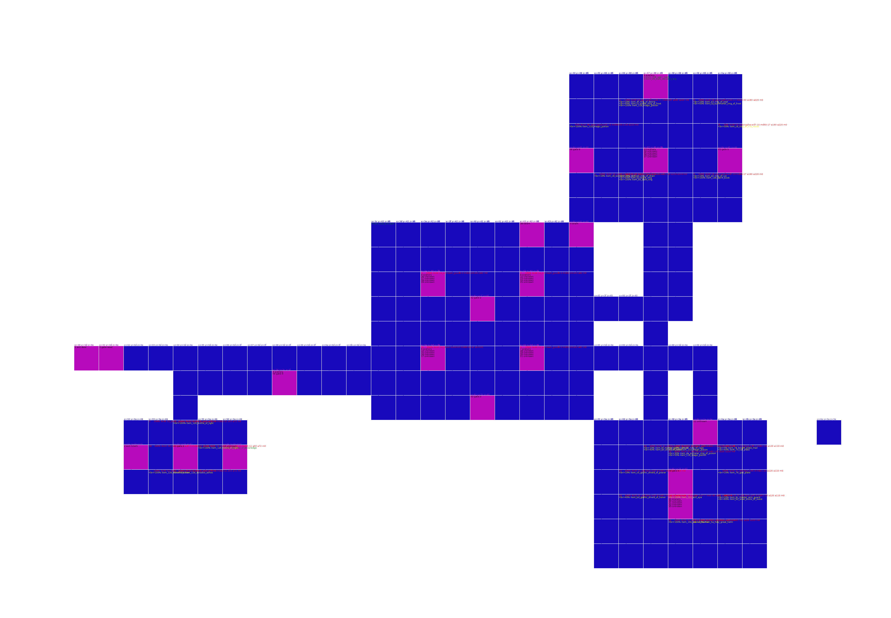
death_world_undead_layer
Item Memory used 16
0 100% 0x40 05_hell_hunter wd5.2-4 md8-7.2 a15 a14 m0
20% item_a0_holy_leg_guard
50% item_7f_metal_glove
1 100% 0x40 05_hell_hunter wd5.2-4 md8-7.2 a15 a14 m0
2 100% 0x40 05_hell_hunter wd5.2-4 md8-7.2 a15 a14 m0
100% item_120_divine_symbol
3 100% 0x40 05_hell_hunter wd5.2-4 md8-7.2 a15 a14 m0
50% item_124_poison_vaccine
4 100% 0x30 08_claw_head wd7-8 md12.4-7.9 a97 a97 m0
5 100% 0x30 08_claw_head wd7-8 md12.4-7.9 a97 a97 m0
50% item_41_keenest_battle_axe
6 100% 0x30 08_claw_head wd7-8 md12.4-7.9 a97 a97 m0
5% item_71_devil_plate_mail
7 100% 0x15 0a_demons_eye wd5-4.6000000000000005 md255-255 a59 a55 m0
8 100% 0x15 0a_demons_eye wd5-4.6000000000000005 md255-255 a59 a55 m0
50% item_125_dust_of_rage
9 100% 0x15 0a_demons_eye wd5-4.6000000000000005 md255-255 a59 a55 m0
a 100% 0x15 0a_demons_eye wd5-4.6000000000000005 md255-255 a59 a55 m0
50% item_125_dust_of_rage
b 100% 0x15 0a_demons_eye wd5-4.6000000000000005 md255-255 a59 a55 m0
15% item_d2_holy_ring
c 100% 0x15 0a_demons_eye wd5-4.6000000000000005 md255-255 a59 a55 m0
50% item_125_dust_of_rage
d 100% 0x15 0a_demons_eye wd5-4.6000000000000005 md255-255 a59 a55 m0
30% item_dd_caustic_priest_ring
e 100% 0x15 0a_demons_eye wd5-4.6000000000000005 md255-255 a59 a55 m0
100% item_11d_magic_potion
f 100% 0x15 0a_demons_eye wd5-4.6000000000000005 md255-255 a59 a55 m0
15% item_c8_sorcerer_ring_of_fire
10 100% 0x15 0a_demons_eye wd5-4.6000000000000005 md255-255 a59 a55 m0
15% item_e2_black_ring
11 100% 0x30 0e_claw_head wd6.800000000000001-7 md4.6000000000000005-7.2 a0 a0 m0
50% item_10c_torch
12 100% 0x30 0e_claw_head wd6.800000000000001-7 md4.6000000000000005-7.2 a0 a0 m0
50% item_10c_torch
13 100% 0x30 0e_claw_head wd6.800000000000001-7 md4.6000000000000005-7.2 a0 a0 m0
100% item_10c_torch
14 100% 0x30 0e_claw_head wd6.800000000000001-7 md4.6000000000000005-7.2 a0 a0 m0
100% item_120_divine_symbol
21 100% 0x20 04_king_edward wd22-7 md60-60 a154 a150 m35
30 100% 0x20 01_unknown_b wd25-25 md49-58 a90 a110 m34
31 100% 0x10 09_pulsating_heart wd5-4.800000000000001 md99.9-99.9 a0 a0 m0
32 100% 0x10 0d_fat_mole_e wd0-0 md0-0 a0 a0 m33
0 item_10a_cune
1 item_138_soul_pod_29_sp
2 item_10a_cune
3 item_10a_cune
4 item_10a_cune
5 item_137_soul_pod_53_sp
6 item_111_kings_key
7 item_25_magical_bastard_sword
8 item_2b_fiery_great_sword
9 item_120_divine_symbol
a item_120_divine_symbol
1c item_129_sealed_sword_stone
1d item_129_sealed_sword_stone
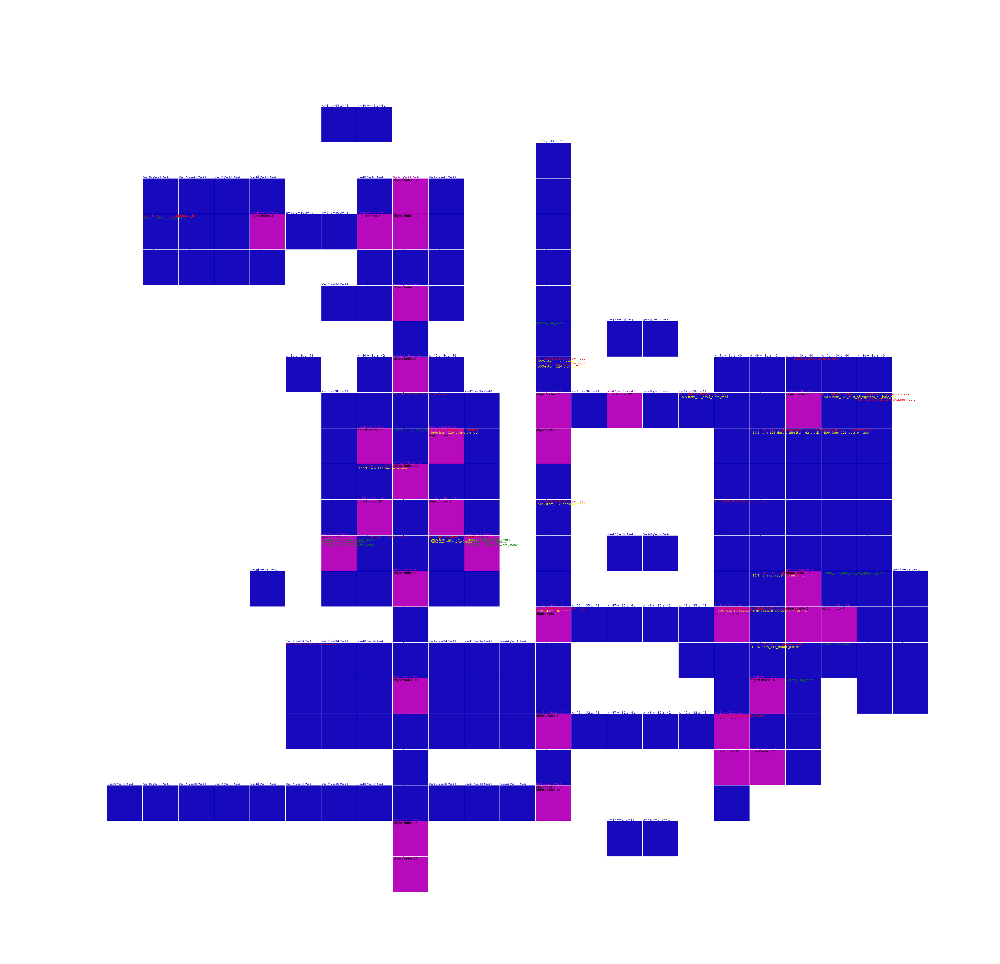
Shadow Tower
shadow_tower_part1
Item Memory used 0

shadow_tower_part2
Item Memory used 0
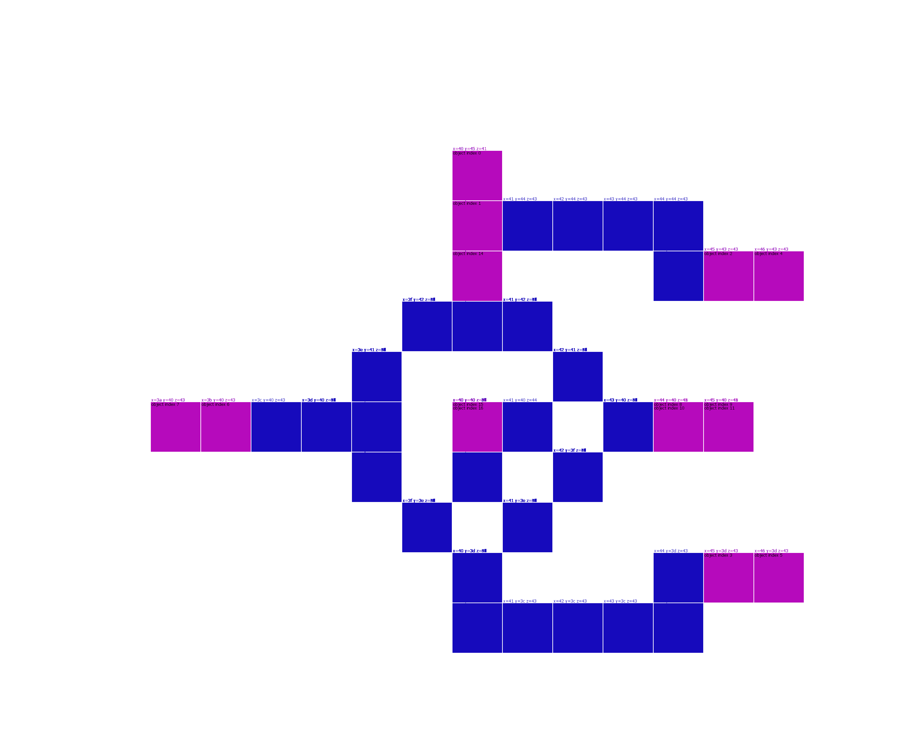
shadow_tower_part3
Item Memory used 0

Void
void
Item Memory used 0
0 0% 0x20 00_balron_a wd20-22 md58.5-59.6 a114 a114 m15
3 0% 0x20 03_balron_b wd11-12.4 md38.800000000000004-18.6 a194 a194 m16
5 0% 0x20 08_demon_king wd5-7 md255-255 a0 a0 m18
30 100% 0x20 01_unknown_i wd11-12 md8.5-9.600000000000001 a114 a114 m0
31 100% 0x20 02_unknown_j wd11-12 md8.5-9.600000000000001 a114 a114 m0
32 0% 0x20 04_unknown_k wd0-0 md0-0 a0 a0 m17
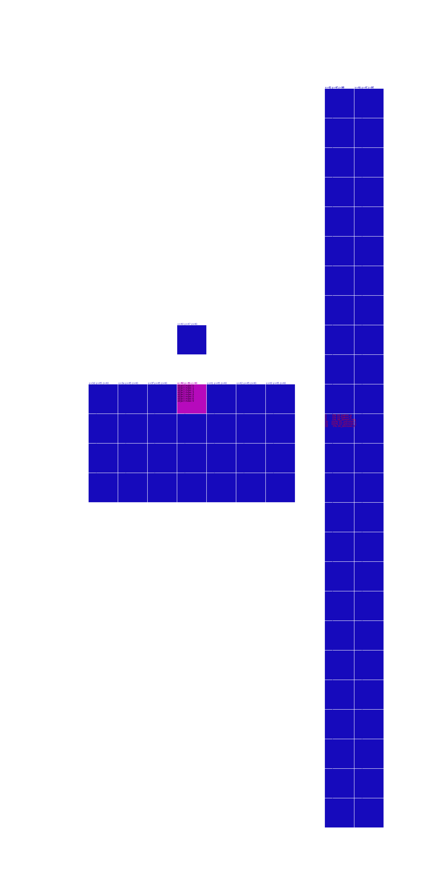